"നാം ഭയപ്പെടേണ്ട ഒരേയൊരു കാര്യം ഭയം മാത്രമാണ്" എന്നത് ഒരു മണ്ടൻ ഉപദേശമായിരുന്നു.
അതെ, അവശ്യ സാധനങ്ങൾ വാങ്ങിക്കൂട്ടേണ്ട — പക്ഷെ ഭരണാധികാരികൾ ഭയത്തെ ലഘുകരിക്കാൻ ശ്രമിച്ചാൽ അവർ പൊതുജനങ്ങളെ നിസ്സംഗതരാക്കുകയായിരിക്കും ചെയ്യുക.
ഭയമല്ല പ്രശ്നം, നമ്മൾ എങ്ങിനെ നമ്മുടെ ഭയത്തെ ഉപയോഗിക്കുന്നു എന്നതാണ് . ഭയം നമുക്ക് അപകടങ്ങളെ നേരിടാനും, ഭാവിയിലെ അപകടങ്ങൾക്കായി കരുതലെടുക്കാനുമുള്ള ഊർജ്ജം നൽകുന്നു.
സത്യത്തിൽ, ഞങ്ങൾ (മാർസൽ, എപിഡെമിയോളജിസ്റ്റ് + നിക്കി, കല/കോഡ്) ആശങ്കാകുലരാണ്. നിങ്ങളും അങ്ങിനെയാണെന്ന് ഞങ്ങൾ പന്തയം വയ്ക്കാം! അതിനാലാണ് ഞങ്ങളുടെ ഭയം ഞങ്ങൾ വഴിതിരിച്ചു വിട്ട്, നിങ്ങൾക്ക് നിങ്ങളുടെ ഭയത്തെ വഴി തിരിച്ചു വിട്ട് താഴെ പറയുന്ന കാര്യങ്ങൾ മനസ്സിലാക്കാൻ സാധിക്കുന്ന, പ്ലേയബിൾ സിമുലേഷൻസ് ഉണ്ടാക്കിയത്:
- കഴിഞ്ഞ ഏതാനും മാസങ്ങൾ (എപിഡെമിയോളജി ബാലപാഠങ്ങൾ, SEIR മോഡൽ, R & R0)
- വരുന്ന ഏതാനും മാസങ്ങൾ (ലോക്ക്ഡൗണൂകൾ, കോണ്ടാക്ട് ട്രേസിങ്ങ്, മാസ്കുകൾ)
- വരുന്ന ഏതാനും വർഷങ്ങൾ (ഇമ്മ്യൂണിറ്റി നഷ്ടപ്പെടുമോ? വാക്സിൻ ഇല്ലാതിരിക്കുമോ?)
ഈ വിവരണം (മേയ് 1, 2020നു പ്രസിദ്ധീകരിച്ചത്. ഇവിടെ ക്ലിക്ക് ചെയ്യൂ!→1) നിങ്ങൾക്ക് പ്രത്യാശയും ഭീതിയും നൽകാനുള്ളതാണ്. കോവിഡ്-19നെ പരാജയപ്പെടുത്തുക എന്നത് ഒരു തരത്തിൽ നമ്മുടെ മാനസികവും, സാമ്പത്തികവുമായ ആരോഗ്യം കാത്തു സൂക്ഷിക്കുക എന്നതാണ്. ഭാവി പദ്ധതികൾ ഉണ്ടാക്കാൻ നമുക്ക് ശുഭാപ്തിവിശ്വാസവും, പ്രതിരോധ മാർഗ്ഗം തീർക്കാൻ അല്പം ദോഷ ചിന്തകളും ആവശ്യമുണ്ട്.
ഗ്ലാഡിസ് ബി. സ്റ്റേൺ ഒരിക്കൽ പറയുകയുണ്ടായി, “ശുഭാപ്തിവിശ്വാസി വിമാനം കണ്ടുപിടിക്കുമ്പോൾ ദോഷൈകദൃക്ക് പാരച്യൂട്ട് കണ്ടുപിടിക്കും.”
അപ്പോൾ ബെൽറ്റ് മുറുക്കൂ: നമ്മൾ അല്പം ടർബുലൻസ് നേരിടാൻ പോവുകയാണ്.

പൈലറ്റുമാർ വിമാനം തകർന്നു വീഴാതിരിക്കാൻ ഫ്ലൈറ്റ് സിമുലേറ്ററുകളുപയോഗിച്ച് പരിശീലനം നേടാറുണ്ട്.
എപിഡെമിയോളജിസ്റ്റുകൾ (Epidemiologists), എപിഡെമിക്കുകളുടെ (മഹാമാരികളൂടെ) സിമുലേഷൻസ് ഉപയോഗിച്ച് ഒരു മനുഷ്യസമൂഹത്തെ തകർന്ന് വീഴാതെ എങ്ങിനെ നിലനിർത്താമെന്ന് പഠിക്കുന്നു.
അപ്പോൾ, നമുക്ക് വളരെ, വളരെ ലളിതമായ "എപിഡെമിക് ഫ്ലൈറ്റ് സിമുലേറ്റർ" നിർമ്മിക്കാം! ഈ സിമുലേഷനിൽ രോഗബാധിതരായ ആളുകൾ
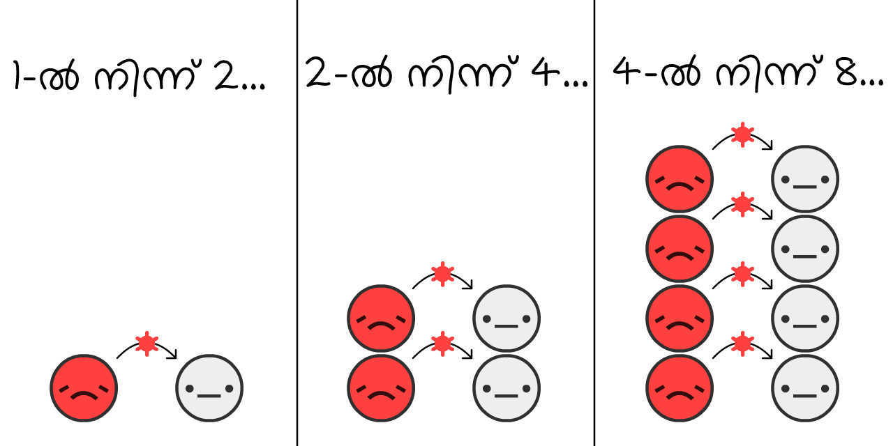
ഒരു കോവിഡ്-19 വ്യാപനത്തിന്റെ ആരംഭത്തിൽ, വൈറസ് ഒരു
മറ്റെല്ലാം ഒഴിവാക്കി, ഒരു സമൂഹത്തിലെ
സിമുലേഷൻ പ്ലേ ചെയ്യാൻ "തുടങ്ങുക" എന്ന ബട്ടൺ അമർത്തൂ! ഇത് നിങ്ങൾക്ക് സാഹചര്യങ്ങൾ മാറ്റി എത്ര തവണ വേണമെങ്കിലും പ്ലേ ചെയ്ത് നോക്കാം: (അല്പം സാങ്കേതിക മുന്നറിയിപ്പുകൾ: 3)
ഇതാണ് എക്സ്പൊണൻഷ്യൽ വളർച്ചാ കർവ് (exponential growth curve) എന്നറിയപ്പെടുന്നത്. രോഗം ചെറുതായി തുടങ്ങി, വളരെപ്പെട്ടെന്നൊരു വിസ്ഫോടനമായി മാറുന്നു. "ഓ, ഇത് വെറും ഫ്ലൂ അല്ലെ" എന്നതിൽ നിന്ന് "അല്ല, ഫ്ലൂ പനി ഒരിക്കലും സമ്പന്ന നഗരങ്ങളിൽ പൊതു ശവക്കുഴികൾ തോണ്ടാറില്ലല്ലോ" എന്ന അവസ്ഥയിലേക്ക് കാര്യങ്ങൾ മാറുന്നു.
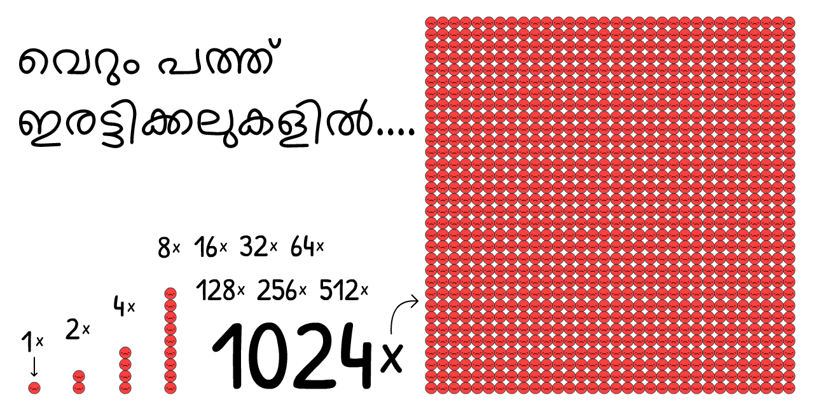
പക്ഷെ, ഈ സിമുലേഷൻ തെറ്റാണ്. ഭാഗ്യത്തിന് എക്സ്പൊണൽഷ്യൽ ആയ വളർച്ച അനന്തമായി നീളില്ല. വൈറസിനു പകരണമെങ്കിൽ അത് നിലവിൽ വൈറസ് ബാധയില്ലാത്ത ആളുകൾ വേണമല്ലോ:
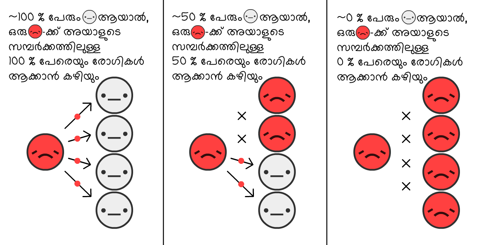
കൂടുതൽ രോഗികൾ
ഇതെങ്ങിനെയാണ് ഒരു മഹമാരിയുടെ വളർച്ചയെ തടയുന്നത്? നമുക്ക് നോക്കാം:
ഇതാണ് "S-ആകൃതിയിലുള്ള" ലോജിസ്റ്റിക് വളർച്ചാ കർവ് (logiistic growth curve). ചെറുതായി തുടങ്ങി, ഒരു വിസ്ഫോടനം സൃഷ്ടിച്ച്, അവസാാനം വളർച്ചയുടെ വേഗം കുറയുന്നു.
പക്ഷെ, ഈ സിമുലേഷനും തെറ്റാണ്. രോഗബാധയുള്ള ആളുകൾ
കാര്യങ്ങൾ അല്പം ലളിതമാക്കാൻ, എല്ലാ രോഗികളും
കോവിഡ്-19ന്റെ കാര്യത്തിൽ, ഒരാൾ ശരാശരി 10 ദിവസത്തേക്ക്
സിമുലേഷൻ 100% രോഗികളുമായി
ഇത് എക്സ്പൊണൻഷ്യൽ വളർച്ചയുടെ നേരെ വിപരീത സാഹചര്യമാണ്, എക്സ്പൊണൽഷ്യൽ ഡീകെയ് കർവ് (exponential decay curve).
ഇനി, S-ആകൃതിയിലുള്ള ലോജിസ്റ്റിക് വളർച്ച, സുഖം പ്രാപിക്കുന്നവരെക്കൂടി ചേർത്ത് സിമുലേറ്റ് ചെയ്താലോ?
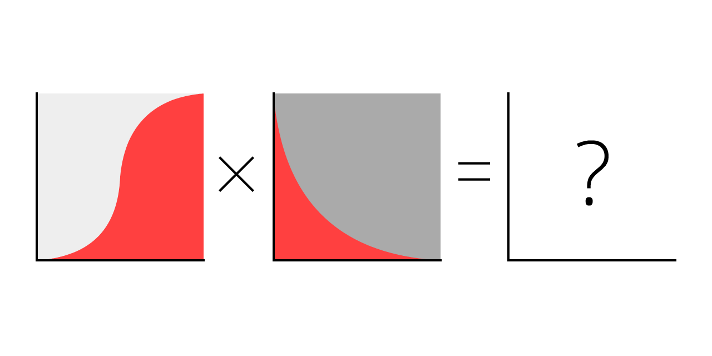
നമുക്ക് നോക്കാം.
ചുവന്ന കർവ് നിലവിലുള്ള കേസുകളാണ്
ചാരനിറമുള്ള കർവ് ആകെയുള്ള കേസുകളും (നിലവിലുള്ളവർ + സുഖമായവർ
ദാ, ഇവിടെയാണ് പ്രശസ്തമായ ആ കർവ് ഉണ്ടാകുന്നത്! ഇതൊരു ബെൽ കർവ് അല്ല, ഇതൊരു "ലോഗ്-നോർമൽ (log-normal)" കർവും അല്ല. ഇതിനു പ്രത്യേകിച്ച് പേരൊന്നുമില്ല. ഇത് പക്ഷെ നിങ്ങൾ ഒത്തിരിവട്ടം കണ്ടുകാണും, എല്ലായിടത്തും അടിച്ച് പരത്തുന്നതായി കണ്ടത് തന്നെ.
ഇതാണ് എസ്ഐആർ മാതൃക (SIR Model,5 Susceptible
എപിഡെമിയോളജി ബാലപാഠങ്ങളിൽ ഏറ്റവും പ്രധാനപ്പെട്ട രണ്ടാമത്തെ കാര്യം:
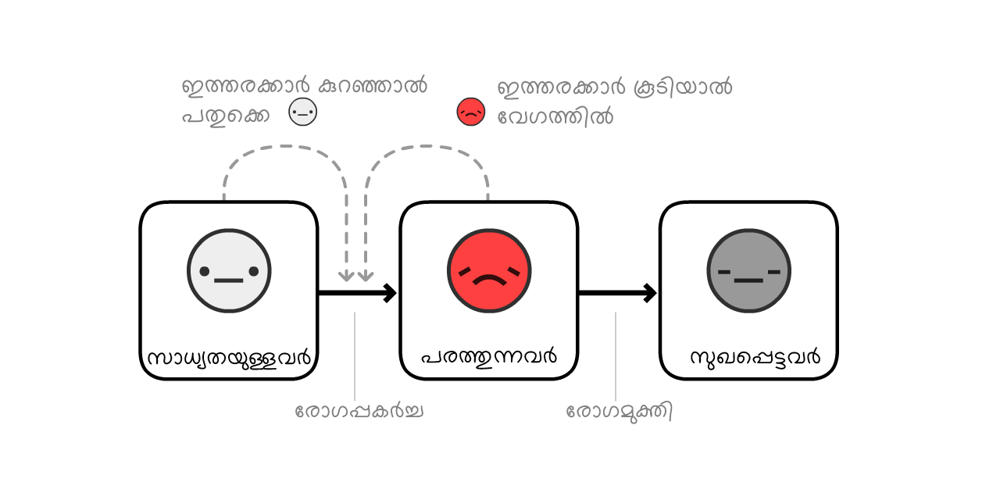
കുറിപ്പ്: പദ്ധതികൾ ആസൂത്രണം ചെയ്യുന്നവരെ സഹായിക്കുന്ന മോഡലുകൾ ഇതിനേക്കാളൊക്കെ വളരെ, വളരെ സങ്കീർണ്ണമായതാണ്! പക്ഷെ SIR മോഡലിന്, സൂക്ഷ്മത അല്പം കുറവായിരിക്കുമെങ്കിലും, പൊതുവായുള്ള കണ്ടെത്തലുകളെ വിശദീകരിക്കാനാവും.
നമുക്ക് ഇതിലേക്ക് അല്പം വൈവിധ്യം വരുത്തിയാലോ: ഒരു
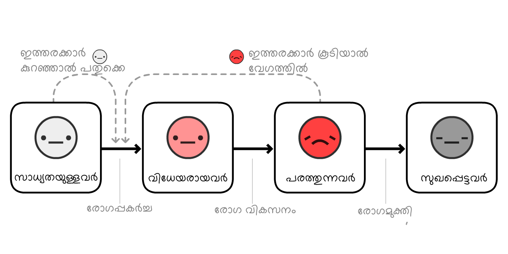 (ഈ വകഭേദത്തെയാണ് എസ്ഇഐആർ മാതൃക (SEIR Model)6 എന്ന് വിളിക്കുന്നത്, ഇതിൽ "E" "സ്വീകർത്താവിനെ"
കോവിഡ്-19ന്റെ കാര്യത്തിൽ, ഒരാൾ രോഗിയാണ്-പക്ഷെ-രോഗവാഹിയല്ല
ചുവപ്പ് + പിങ്ക് കർവ് നിലവിലുള്ള കേസുകൾ (രോഗമുള്ളവർ
ചാരനിറമുള്ള കർവ് മൊത്തം കേസുകൾ (നിലവിലുള്ളവർ + സുഖപ്പെട്ടവർ
വലിയ വ്യത്യാസമില്ല! എത്ര നാൾ ഒരാൾ
എന്തു കൊണ്ടാണത്? കാരണം എപിഡെമിയോളജി ബാലപാഠങ്ങളിലെ ഏറ്റവും പ്രധാനപ്പെട്ട ആശയം എന്താണെന്ന് വച്ചാൽ:
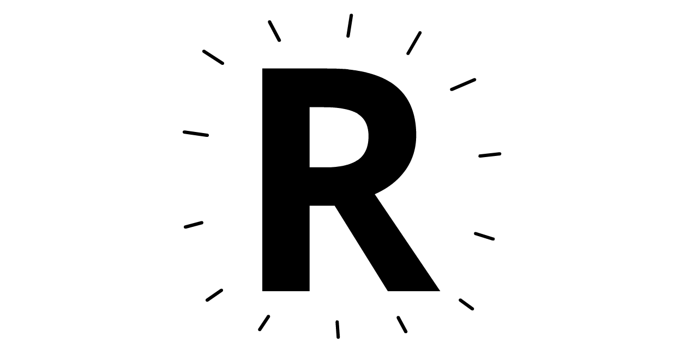
ഇത് "റിപ്രൊഡക്ഷൻ നമ്പർ" എന്നതിന്റെ ചുരുക്കമാണ്. ഇത്
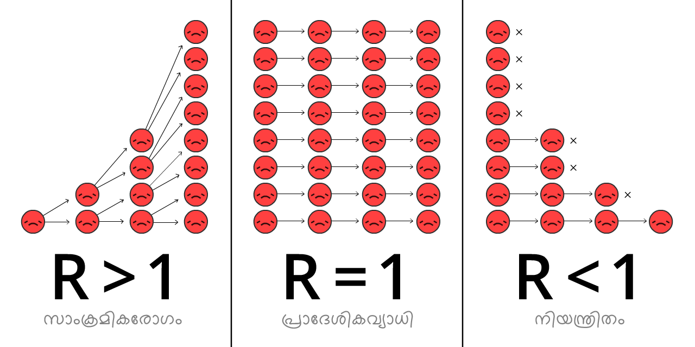
Rന്റെ വില ഒരു പകർച്ചവ്യാധിക്കിടെ, നമുക്ക് രോഗ പ്രതിരോധശേഷി ലഭിക്കുന്നതിലൂടെയും നമ്മുടെ ഇടപെടലുകളിലൂടെയും, മാറിക്കൊണ്ടേയിരിക്കും.
R0 (ആർ-നോട്ട് എന്നുച്ചരിക്കും) എന്നാൽ ഒരു വ്യാധിയുടെ തുടക്കത്തിൽ, പ്രതിരോധശേഷിയോ മറ്റിടപെടലുകളോ ഇല്ലാത്ത ഘട്ടത്തിലുള്ള R0 ഒരു വൈറസിന്റെ ശക്തിയെന്തെന്ന സൂചന നൽകുന്ന സംഖ്യയാണ്, പക്ഷേ ഇത് ഓരോ സ്ഥലങ്ങളിലും വ്യത്യസ്തമായിരിക്കും. ഉദാഹരണത്തിന്, ജനസാന്ദ്രത കൂടിയ നഗരങ്ങളിൽ നിന്ന് വ്യത്യസ്തമായിരിക്കും R0 ഗ്രാമങ്ങളിൽ.
(മിക്ക വാർത്താ ലേഖനങ്ങളും – ചില ഗവേഷണ പ്രബന്ധങ്ങൾ പോലും! – R-ഉം R0-ഉം തമ്മിൽ കൂട്ടിക്കുഴയ്ക്കും. വീണ്ടൂം, ശാസ്ത്രം അല്പം ദുരൂഹമാണ്)
"സീസണുകളിൽ" ഉണ്ടാവുന്ന ഫ്ലൂ പനിയുടെ R0 ഏകദേശം 1.288 ആണ്. അതായത്, ഒരു ഫ്ലൂ പകർച്ചപ്പനി പൊട്ടിപ്പുറപ്പെടുന്ന ഘട്ടത്തിൽ, ഒരു
കോവിഡ്-19ന്റെ R0 2.2 ആണെന്ന് കണക്കാക്കപ്പെടുന്നു,9 എന്നിരിക്കിലും ഇനിയും പൂർണ്ണമല്ലാത്ത ചില പഠനങ്ങൾ ഇത് വുഹാനിൽ 5.7(!) ആയിരുന്നെന്നും പറയുന്നു.10
നമ്മുടെ സിമുലേഷനുകളിൽ – തുടക്കത്തിലും, ശരാശരിയിലും – 10 ദിവസ കാലയളവിൽ ഒരു
ഈ R0 കാൽക്കുലേറ്റർ ഉപയോഗിച്ച് നോക്കൂ, R0 എങ്ങിനെയാണ് രോഗം സുഖമാകാനും, പുതിയതായി രോഗം ബാധിക്കാനുമെടൂക്കുന്ന കാലയളവുകളുമായി ബന്ധപ്പെട്ടിരിക്കുന്നതെന്ന് മനസ്സിലാകും:
പക്ഷെ ഓർമ്മിക്കുക, കുറച്ച്
ആവശ്യത്തിനാളുകൾക്ക് രോഗപ്രതിരോധശേഷി ലഭിച്ചാൽ, R < 1, വൈറസിനെ പിടിച്ച് കെട്ടിക്കഴിഞ്ഞു! ഇതിനെയാണ് സാമൂഹ്യ പ്രതിരോധം അഥവാ ഹെർഡ് ഇമ്മ്യൂണിറ്റി എന്ന് വിളിക്കുന്നത്. ഫ്ലൂവിന്റെ കാര്യത്തിൽ, ഒരു വാക്സിന്റെ സഹായത്താലാണ് ഹെർഡ് ഇമ്മ്യൂണിറ്റി ലഭിക്കുന്നത്. എല്ലാവർക്കും രോഗം ഉണ്ടാവുക വഴി "സ്വാഭാവികമായ ഹെർഡ് ഇമ്മ്യൂണിറ്റി" ഉണ്ടാക്കുക എന്നത് ഒരു ഭയാനകമായ ആശയമാണ്. (പക്ഷേ ഇത് നിങ്ങൾ കരുതുന്ന പോലെയല്ല! ഇത് നമുക്ക് പിന്നീട് വിശദീകരിക്കാം.)
ഇനി നമുക്ക്, ഹെർഡ് ഇമ്മ്യൂണിറ്റി പരിധി വച്ച് R0, R എന്നിവ സമയവുമായി തട്ടിച്ച് നോക്കി, SEIR മോഡൽ ഒന്നു കൂടി പ്ലേ ചെയ്ത് നോക്കാം:
കുറിപ്പ്: ആകെയുള്ള കേസുകൾ ഹെർഡ് ഇമ്മ്യൂണിറ്റ് പരിധിയിൽ നിൽക്കുന്നില്ല, പകരം അതും കഴിഞ്ഞ് കുതിക്കുന്നു! ഇപ്പോഴുള്ള കേസുകൾ അതിന്റെ കൃത്യം ഉന്നതിയിലെത്തുമ്പോഴാണ് ആകെയുള്ള കേസുകൾ ഈ പരിധി ലംഘിക്കുന്നത്. (ഇത് നിങ്ങൾ എന്ത് ചെയ്താലും മാറില്ല – ഒന്ന് ശ്രമിച്ച് നോക്കൂ!)
ഇതിനു കാരണം, ഹെർഡ് ഇമ്മ്യൂണിറ്റി പരിധിയേക്കാൾ കൂടുതൽ non-
ഈ വിവരണത്തിൽ നിന്ന് ഒരു പാഠം നിങ്ങൾക്ക് ഉൾക്കൊള്ളണമെങ്കിൽ, അതിതാണ് (ഇത് വളരെ സങ്കീർണ്ണമായ ഒരു ചിത്രമായതിനാൽ അത് ഉൾക്കൊള്ളാൻ അല്പം സമയമെടൂത്തോളൂ:
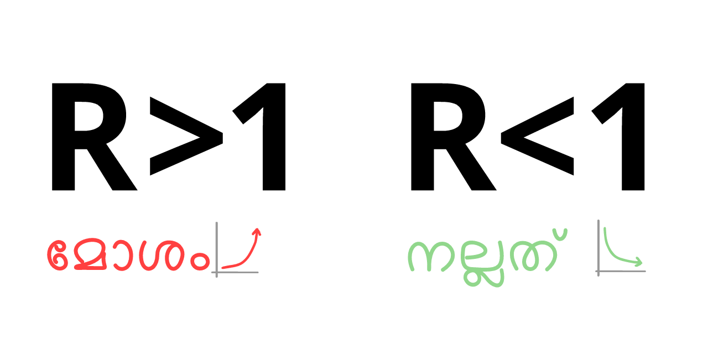
ഇതിന്റെയർത്ഥം: കോവിഡ്-19നെ തടഞ്ഞു നിർത്താൻ നമ്മൾ എല്ലാ രോഗ പകർച്ചയേയുമെന്നല്ല, അതിനടുത്ത് എണ്ണത്തെ പോലും തടയേണ്ടതില്ല!
ഇതൊരു വിരോധാഭാസമായി തോന്നാം. കോവിഡ്-19 വളരെയധികം പകരുന്ന ഒന്നാണ്, എന്നാൽ അതിനെ തടഞ്ഞു നിർത്താൻ, നമുക്ക് 60%-ലേറെ രോഗപ്പകർച്ചകൾ "മാത്രം" തടഞ്ഞാൽ മതിയാകും. 60%?! ഒരു സ്കൂൾ പരീക്ഷയ്ക്കുള്ള ഗ്രേഡാണെങ്കിൽ, ഒരു D- ആണത്. പക്ഷെ R0 = 2.5 ആയിരിക്കുമ്പോൾ, അതിന്റെ 61% തടഞ്ഞാൽ നമുക്ക് R = 0.975 എന്ന് ലഭിക്കും, അതായത് R < 1, വൈറസിനെ പിടിച്ച് കെട്ടി! (ശരിയായ ഫോർമുല:12)
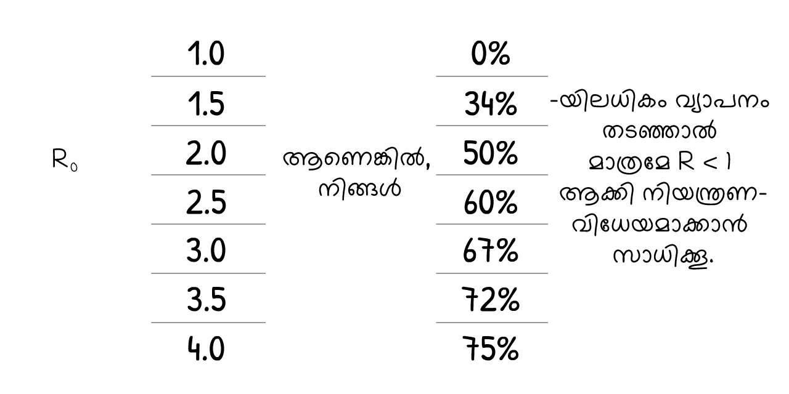 (ഞങ്ങളൂടെ സിമുലേഷനിലെ R0 വിലയോ മറ്റേതെങ്കിലും സംഖ്യയോ വളരെ കുറവോ, കൂടുതലോ ആണെന്ന് നിങ്ങൾക്ക് അഭിപ്രായമുണ്ടെങ്കിൽ, അത് വളരെ നല്ല കാര്യമാണ്. നിങ്ങൾ ഞങ്ങളുടെ നിഗമനങ്ങളെ ചാലഞ്ച് ചെയ്യുകയാണ്! ഈ വിവരണത്തിന്റെ അവസാനം ഒരു "സാൻഡ്ബോക്സ് മോഡ്" ഉണ്ട്, അവിടെ നിങ്ങൾക്ക് സ്വന്തം സംഖ്യകൾ ചേർക്കാം, എന്നിട്ട് സിമുലേറ്റ് ചെയ്ത് എന്ത് സംഭവിക്കുമെന്ന് നോക്കാം)
നിങ്ങൾ കേട്ടിട്ടുള്ള എല്ലാ കോവിഡ്-19 ഇടപെടലുകളും – കൈ കഴുകൽ, സാമൂഹ്യ/ശാരീരിക അകലം പാലിക്കൽ, ലോക്ക്ഡൗണുകൾ, സ്വയം-ഒറ്റപ്പെടൽ, കോണ്ടാക്ട് ട്രേസിങ്ങ്, ക്വാറന്റൈൻ ചെയ്യുന്നത്, മുഖാവരണങ്ങൾ, എന്നിങ്ങനെ "ഹെർഡ് ഇമ്മ്യൂണിറ്റി" വരെ – അവ എല്ലാം ചെയ്യുന്നത് ഒരേ കാര്യമാണ്:
R < 1 ആക്കുക.
അങ്ങിനെയെങ്കിൽ ഇപ്പോൾ, നമുക്ക് "എപിഡെപിക് ഫ്ലൈറ്റ് സിമുലേറ്റർ" ഇക്കാര്യം മനസ്സിലാക്കാൻ ഉപയോഗിച്ചാലോ: എങ്ങിനെ നമ്മുടെ മാനസികാരോഗ്യവും, സാമ്പത്തികാരോഗ്യവും പരിപാലിക്കപ്പെടുന്ന വിധത്തിൽ
ഒരു എമർജൻസി ലാൻഡിങ്ങിനു തയ്യാറെടുത്തോളൂ...
...വളരെ മോശമായേനെ. നമ്മൾ ഒഴിവാക്കിയ മറ്റു സാദ്ധ്യതകൾ ഇവയൊക്കെയാണ്:
സീൻ 0: ഒന്നും ചെയ്യാതിരിക്കുക
കോവിഡ്-19 ബാധിച്ച ഒരു പത്തിരുപതാളുകൾ ഐസിയുകളിൽ പ്രവേശിക്കേണ്ടി വരും.13 അമേരിക്ക പോലുള്ള ഒരു സമ്പന്ന രാജ്യത്ത്, 3400 ആളുകൾക്ക് ഒരു ഐസിയു വച്ചാണുള്ളത്.14 അതായത്, അമേരിക്കയ്ക്ക് 3400 ആളുകളിൽ 20 ആളുകൾക്ക് ഒരേ സമയം രോഗം ബാധിക്കുന്നത് കൈകാര്യം ചെയ്യാൻ കഴിയും – അല്ലെങ്കിൽ, ജനസംഖ്യയുടെ 0.6% ശതമാനത്തിന് രോഗം വരുന്നത്.
ഇനിയിത് മൂന്നിരട്ടിയായി 2% ആയാൽ, നമ്മൾ ഒന്നും ചെയ്യാതെയിരുന്നാൽ ഇതായിരിക്കും സംഭവിച്ചിട്ടുണ്ടാവുക:
ഒട്ടും നല്ലതല്ല.
ഇതാണ് മാർച്ച് 16-ലെ ഇമ്പീരിയൽ കോളേജ് റിപ്പോർട്ട് കണ്ടെത്തിയത്: ഒന്നും ചെയ്യാതിരുന്നാൽ, നമ്മൾ ഐസിയുകൾ നിറഞ്ഞു കവിഞ്ഞ്, 80% അധികം ജനങ്ങൾക്ക് രോഗം ബാധിക്കുന്ന അവസ്ഥയിലെത്തും. (ഓർമ്മിക്കുക: മൊത്തം കേസുകൾ ഹെർഡ് ഇമ്മ്യൂണിറ്റി പരിധിയും കഴിഞ്ഞ് കുതിക്കും)
ഒരു 0.5% രോഗബാധിതർ മരണമടഞ്ഞാൽ പോലും15 – കൂടുതൽ ഐസിയുകൾ ലഭ്യമല്ല എന്ന ഊഹം വച്ച് – ഏകദേശം 30 കോടി ജനങ്ങളുള്ള അമേരിക്ക പോലുള്ള ഒരു രാജ്യത്ത്, 30 കോടിയുടെ 80 ശതമാനത്തിന്റെ 0.5% = 12 ലക്ഷം ആളുകൾ മരണമടയും... നമ്മൾ ഒന്നും ചെയ്തില്ലെങ്കിൽ.
(ധാരാളം മാധ്യമങ്ങളൂം; നവ മാധ്യമങ്ങളൂം "80% ആളുകൾക്ക് രോഗം ബാധിക്കും" എന്നൊക്കെ "നമ്മൾ ഒന്നും ചെയ്തില്ലെങ്കിൽ" എന്ന് ചേർക്കാതെ തട്ടിവിട്ടിരുന്നു. ഭീതിയെ ക്ലിക്കുകളിലേക്ക് നയിക്കുന്നു, മനസ്സിലാക്കാനുള്ള ശ്രമത്തിലേക്കല്ല. ഹാ.
സീൻ 1: കർവിനെ പരത്തൂ / ഹെർഡ് ഇമ്മ്യൂണിറ്റി
"കർവിനെ പരത്തൂ" പദ്ധതി എല്ലാ പൊതുജനാരോഗ്യ സംഘടനകളൂം വിളിച്ച് പറഞ്ഞപ്പോൾ, യുകെയിലെ "ഹെർഡ് ഇമ്മ്യൂണിറ്റി" പദ്ധതിയെ ലോകം മുഴുവൻ കൂക്കി വിളിച്ചു. രണ്ടൂം ഒരേ പദ്ധതിയായിരുന്നു. യുകെ സർക്കാരത് വിളിച്ച് പറഞ്ഞ രീതി പാളിപ്പോയി.16
എങ്കിലും, രണ്ട് പദ്ധതികൾക്കും ഒരു പ്രധാന പാളിച്ചയുണ്ടായിരുന്നു.
ആദ്യം, നമുക്ക് "കർവിനെ പരത്തൂ" പദ്ധതി സ്വീകരിക്കുന്ന രണ്ട് മാർഗ്ഗങ്ങളെ നോക്കാം: കൈ കഴുകൽ, ശാരീരിക അകലം പാലിക്കൽ.
ധാരാളമായി കൈ കഴുകുന്നത് ഉയർന്ന വരുമാനമുള്ള രാജ്യങ്ങളിൽ പനിയും, ജലദോഷവുമൊക്കെ ഏകദേശം 25% കണ്ടു കുറയ്ക്കും17, അതേ സമയം ലണ്ടൻ നഗരത്തിലെമ്പാടുമുള്ള ലോക്ക്ഡൗൺ സമ്പർക്കങ്ങൾ 70% കണ്ട് കുറച്ചു.18. അപ്പോൾ, കൈ കഴുകുന്നത് R വില 25% വരെയും, അകലം പാലിക്കുന്നത് R വില 70% വരെയും കുറയ്ക്കുമെന്ന് അനുമാനിച്ചാൽ:
കൈകഴുകുകയും, അകലം പാലിക്കുകയും ചെയ്യുന്ന ആളുകളൂടെ ശതമാനം R വില എങ്ങിനെ കുറയ്ക്കുമെന്നറിയാൻ ഈ കാൽക്കുലേറ്റർ ഉപയോഗിച്ച് നോക്കൂ: (ഈ കാൽക്കുലേറ്റർ ചിത്രീകരിക്കുന്നത് പരസ്പര ബന്ധിതമായ ഫലങ്ങളാണ്, അതിനാലാണ് ഒന്ന് വർദ്ധിപ്പിക്കുമ്പോൾ അത് മറ്റുള്ളവയുടെ ഫലം കുറയ്ക്കുന്നതായി തോന്നുന്നത്.19)
ഇപ്പോൾ, മാർച്ച് 2020 മുതൽ വർദ്ധിച്ച തോതിൽ കൈകൾ കഴുകുകയും ചെറിയ തോതിൽ മാത്രം ശാരീരിക അകലം പാലിക്കുകയും ചെയ്തിരുന്നെങ്കിൽ, കോവിഡ്-19 മഹാമാരിക്കെന്ത് സംഭവിക്കുമായിരുന്നു എന്ന് നോക്കാം – R ഇപ്പോഴും ചെറുതാണ്, എന്നാൽ ഒന്നിനു മുകളിലുമാണ്:
മൂന്ന് കുറിപ്പുകൾ:
ഈ പ്രക്രിയ മൊത്തം കേസുകൾ കുറയ്ക്കുന്നു! നമുക്ക് R < 1 എന്നായില്ലെങ്കിലും, ഹെർഡ് ഇമ്മ്യൂണിറ്റിക്ക് മുകളിലേക്കുള്ള കുതിപ്പിന്റെ തോത് കുറയ്ക്കുക വഴി, R കുറയ്ക്കുന്നത് ജീവനുകൾ രക്ഷിക്കും. "കർവിനെ പരത്തുക" എന്നത് കേസുകൾ കുറയ്ക്കാതെ മൊത്തം കേസുകൾ പരത്തിയെടുക്കുന്നതാണെന്ന് നിരവധിയാളുകൾ കരുതുന്നുണ്ട്. ഏതൊരു എപിഡെമിയോളജി ബാലപാഠങ്ങളുടെ മോഡലിലും ഇത് അസംഭ്യവമാണ്. "80 ശതമാനന്തിൽ അധികം ആളുകൾ രോഗബാധിതരാകും" എന്ന മട്ടിലുള്ള വാർത്തകൾ ഒഴിവാക്കാനാവാത്തതിനാൽ, എന്ത് തന്നെ സംഭവിച്ചാലും മൊത്തം കേസുകൾ കുറയില്ല എന്ന് ചിലയാളുകൾ കരുതും. !!!
അധികമായുള്ള ഇടപെടലുകൾ കാരണം, ഇപ്പോഴുള്ള കേസുകൾ, ഹെർഡ് ഇമ്മ്യൂണിറ്റി പരിധി എത്തുന്നതിനു മുന്നെ തന്നെ ഉന്നതിലെത്തും. യഥാർത്ഥത്തിൽ, ഈ സിമുലേഷനിൽ, മൊത്തം കേസുകൾ ഒരു ചെറിയ അളവിൽ മാത്രമെ ഹെർഡ് ഇമ്മ്യൂണിറ്റിക്ക് മുകളിലേക്ക് കുതിക്കൂ – യുകെയുടെ പദ്ധതി! ആ സമയത്ത്, R < 1, നിങ്ങൾക്ക് വേണമെങ്കിൽ മറ്റ് നിയന്ത്രണങ്ങളൊക്കെ വേണമെങ്കിൽ ഒഴിവാക്കാം, കോവിഡ്-19 നിയന്ത്രിതമായി തന്നെ നിൽക്കും! പക്ഷേ, ഒരു പ്രശ്നം ഇല്ലായിരുന്നെങ്കിൽ...
ഇപ്പോഴും നമ്മൾ ഐസിയുകൾ നിറഞ്ഞ് കവിഞ്ഞ അവസ്ഥയിലാണ്. മാസങ്ങളോളം. (ഓർമ്മിക്കുക, നമ്മൾ സിമുലേഷൻസിനായി അവയുടെ എണ്ണം നേരത്തെ തന്നെ മൂന്നിരട്ടിയായി സങ്കല്പിച്ചിരുന്നു.)
മാർച്ച് 16ലെ ഇമ്പീരിയൽ കോളേജ് റിപ്പോർട്ടിലെ മറ്റൊരു കാര്യം അതായിരുന്നു, അതിന്റെ വെളിച്ചത്തിൽ യുകെ അവരുടെ ആദ്യത്തെ പ്ലാൻ വേണ്ടെന്ന് വച്ചു. ശമനത്തിനുള്ള ഏതൊരു ശ്രമവും (R കുറയ്ക്കുക, എന്നാൽ R > 1 ആയിരിക്കുമ്പോൾ) പരാജയമായിരിക്കും. രക്ഷപെടാനുള്ള ഏക വഴി ഒതുക്കുകയാണ് (R < 1 രീതിയിൽ R കുറയ്ക്കുക).
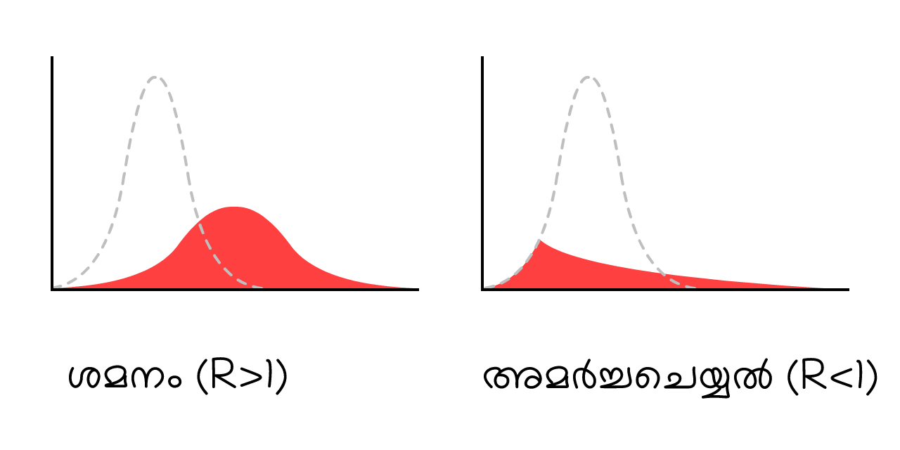
അതായത്, വെറുതെ കർവ് "ഫ്ലാറ്റാക്കാൻ" നോക്കുകയല്ല, അതിനെ അടിച്ചുപരത്തുക തന്നെ. ഉദാഹരണമായി ഒരു...
സീൻ 2: മാസങ്ങൾ-നീളുന്ന ലോക്ക്ഡൗൺ
ഒരു അഞ്ച്-മാസത്തെ ലോക്ക്ഡൗൺ വഴി കർവിനെ അടിച്ചുപരത്തി,
ഓ.
ഇതാണ് എല്ലാവരും പറയുന്ന "രണ്ടാമത്തെ തരംഗം." നമ്മൾ ലോക്ക്ഡൗൺ നീക്കുമ്പോഴേക്കും, R വീണ്ടും R > 1 എന്ന സ്ഥിതിയിലേക്ക് പോകുന്നു. അതായത്, ഒരു ചെറിയ അംശമോ
ലോക്ക്ഡൗൺ ഒരു രോഗശാന്തിയല്ല, അതു വീണ്ടൂമൊരു തുടക്കം മാത്രമാണ്.
അപ്പോൾ നമ്മൾ വീണ്ടൂം, വീണ്ടൂം ലോക്ക്ഡൗൺ ചെയ്യണോ?
സീൻ 3: ഇടവിട്ടുള്ള ലോക്ക്ഡൗൺ
ഇതാദ്യമായി മാർച്ച് 16-ലെ ഇമ്പീരിയൽ കോളേജ് റിപ്പോർട്ടും, പിന്നീട് ഒരു ഹാർവാർഡ് സർവകലാശാല പ്രബന്ധവും മുന്നോട്ട് വച്ചൊരു പരിഹാരമാണ്.20
ഇതാ ഒരു സിമുലേഷൻ: ("റെക്കോർഡ് ചെയ്ത സാഹചര്യം" പ്ലേ ചെയ്ത് കഴിഞ്ഞ്, നിങ്ങൾക്ക് നിങ്ങളുടെ സ്വന്തം ലോക്ക്ഡൗൺ ഷെഡ്യൂൾ, സ്ലൈഡറുകൾ മാറ്റി സിമുലേഷനിടയ്ക്ക് തന്നെ ശ്രമിച്ച് നോക്കാം. ഇടയ്ക്ക് വച്ച് നിർത്താമെന്നും, സിമുലേഷൻ വീണ്ടൂം തുടരാമെന്നും, അതിന്റെ വേഗത മാറ്റാമെന്നും ഓർമ്മിക്കുക.)
ഇത് മൊത്തം കേസുകളെ ഐസിയു ലഭ്യതയ്ക്കുള്ളിൽ ഒതുക്കി നിർത്താൻ സഹായിക്കും! കൂടാതെ, ഒരു വാക്സിൻ ലഭ്യമാക്കുന്നത് വരെ, ഇതാണ് 18-മാസത്തെ ലോക്ക്ഡൗണിനേക്കാൾ വളരെ മികച്ചത്. നമ്മൾ... ഏതാനും മാസങ്ങൾ അടച്ചിടൂന്നു, പിന്നെ ഏതാനും മാസങ്ങൾ തുറക്കുന്നു, അങ്ങിനെ വാക്സിൻ ലഭിക്കുന്നത് വരെ ഇത് തുടരുന്നു. (വാക്സിൻ ലഭിക്കുന്നില്ലെങ്കിൽ ഹെർഡ് ഇമ്മ്യൂണിറ്റി ഉണ്ടാവുന്നത് വരെ ഇത് തുടരുന്നു.. 2022 വരെ.)
"ഐസിയു കപ്പാസിറ്റി" എന്നൊരു വര വരയ്ക്കാൻ എളുപ്പമാണ്, എന്നാൽ നമുക്ക് ഇവിടെ സിമുലേറ്റ് ചെയ്യാൻ പറ്റാത്ത നിരവധി പ്രധാനപ്പെട്ട കാര്യങ്ങളുണ്ട്. ഉദാഹരണമായി:
മാനസിക ആരോഗ്യം: ഒറ്റപ്പെടൽ വിഷാദ രോഗം, ഉത്കണ്ഠ, ആത്മഹത്യ എന്നിവയിലേക്കെല്ലാം നയിച്ചേക്കാം. ഒരു ദിവസം 15 സിഗരറ്റ് വലിക്കുന്നതിനു സമാനമായ രീതിയിൽ അകാല മരണത്തിനും ഇത് കാരണമാവാം.21
സാമ്പത്തിക ആരോഗ്യം: "സമ്പദ് വ്യവസ്ഥയെപ്പറ്റി എന്ത് പറയുന്നു" എന്ന് ചോദിച്ചാൽ നിങ്ങൾക്ക് പണത്തെപ്പറ്റി മാത്രമേ ചിന്തയുള്ളൂ എന്ന് തോന്നിപ്പിച്ചേക്കാ, എന്നാൽ "സമ്പദ് വ്യവസ്ഥ" എന്നാൽ വെറും ഷെയർ മാർക്കറ്റല്ല: അത് തങ്ങളുടെ പ്രിയപ്പെട്ടവർക്ക് ഭക്ഷണവും, പാർപ്പിടവും നൽകാനുള്ള മനുഷ്യരുടെ കഴിവാണ്. തങ്ങളുടെ കുട്ടികളൂടെ ഭാവിയിലേക്ക് നിക്ഷേപിക്കാൻ, കല, ഭക്ഷണം, വീഡിയോ ഗെയിമുകൾ – ജീവിതത്തിനു മൂല്യം നൽകുന്ന കാര്യങ്ങൾ ആസ്വദിക്കാനുള്ള കഴിവു കൂടിയാണത്. അത് മാറ്റിനിർത്തിയാൽ, ദാരിദ്ര്യത്തിന് അതിനാൽ തന്നെ മാനസിക, സാമ്പത്തിക ആരോഗ്യ കാര്യങ്ങളിൽ ഭവിഷ്യത്തുകൾ ഉണ്ടാക്കാൻ കഴിയും.
നമ്മൾ വീണ്ടൂം ലോക്ക് ഡൗൺ ചെയ്യരുത് എന്നല്ല പറയുന്നത്! "സർക്കീട്ട് ബ്രെക്കർ" ലോക്ക്ഡൗണൂകളേപ്പറ്റി നമുക്ക് പിന്നീട് സംസാരിക്കാം. എന്നിരിക്കലും, അത് ആശാവഹമായ ഒന്നല്ല.
പക്ഷെ ഒന്ന് നിൽക്കൂ... തയ്വാനും ദക്ഷിണ കൊറിയയും ഇപ്പോൾതന്നെ കോവിഡ്-19-നെ പിടിച്ച് കെട്ടിയില്ലേ? 4 മാസത്തേക്ക്, നീണ്ട ലോക്ക്ഡൗണുകൽ ഇല്ലാതെ തന്നെ
എങ്ങിനെ?
സീൻ 4: ടെസ്റ്റ്, ട്രേസ്, ഐസൊലേറ്റ്
"തീർച്ചയായും, നമുക്ക് തയ്വാനും ദക്ഷിണ കൊറിയയും തുടക്കത്തിൽ ചെയ്തതുപോലെ ചെയ്യാമായിരുന്നു, പക്ഷേ ഇപ്പോൾ വളരെ വൈകിപ്പോയി. നമുക്ക് തുടക്കം നഷ്ടമായി."
എന്നാൽ അത് തന്നെയാണ് കാര്യം! “ലോക്ക്ഡൗൺ ഒരു പരിഹാരമല്ല, അതൊരു റീസ്റ്റാർട്ട് മാത്രമാണ്”... ഒരു പുതിയ തുടക്കമാണ് നമുക്കാവശ്യം.
തയ്വാനും കൊറിയയും എങ്ങിനെയാണ് കോവിഡ്-19നെ പിടിച്ച് നിർത്തിയതെന്നറിയാൻ, നമുക്ക് കോവിഡ്-19-ന്റെ നാൾവഴി അറിയേണ്ടതുണ്ട്22:
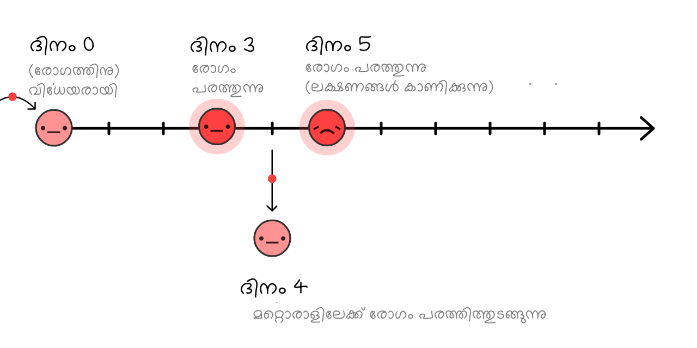
രോഗികൾ സാധാരണ അവർക്ക് സുഖമില്ലാതായി കഴിഞ്ഞേ സ്വയം ഐസോലേറ്റ് ചെയ്യാറുള്ളു (അതായത്, രോഗ ലക്ഷണങ്ങൾ വെളിപ്പെട്ട് കഴിഞ്ഞ്), അപ്പോഴേക്കും വൈറസ് പരന്നിരിക്കാൻ ഇടയുണ്ട്:
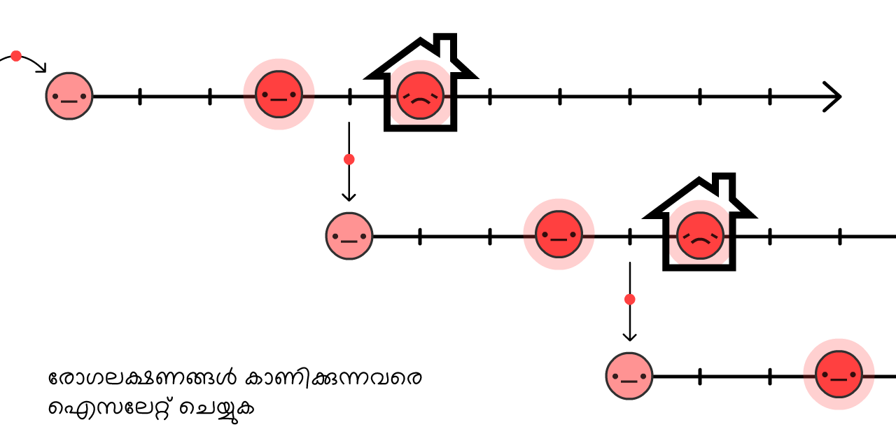
യഥാർത്ഥത്തിൽ, 44% രോഗം പകരുന്നതും ഇവ്വിധത്തിലാണ്: രോഗലക്ഷണൾ വരുന്നതിനു മുന്നെ! 23
പക്ഷെ, നമുക്ക് രോഗലക്ഷണങ്ങൾ കാണിക്കുന്നവരുമായി സമ്പർക്കത്തിൽ വരുന്നവരെ കണ്ടെത്തി ക്വാറന്റൈൻ ചെയ്യാനായാൽ ... നമുക്ക് രോഗം പടരുന്നത് തടയാനാകും, ഒരടി മുന്നിൽ നിന്നു കൊണ്ട് തന്നെ!
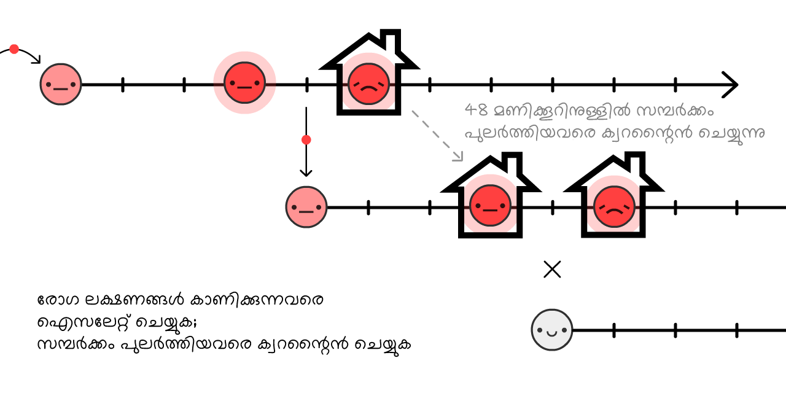
ഇതിനെയാണ് കോണ്ടാക്ട് ട്രേസിങ്ങ് എന്ന് വിളിക്കുന്നത്. ഇത് പഴയൊരു ആശയമാണ്, ഇബോള കാലത്ത് വളരെയധികം ഉപയോഗിച്ച ഒന്ന്24, ഇപ്പോൾ തയ്വാനും,ദക്ഷിണ കൊറിയയും കോവിഡ്-19 തടയുന്നതിന് സ്വീകരിച്ച പ്രധാന മാർഗ്ഗം ഇതാണ്!
(ഇത് നമ്മുടെ പരിമിതമായ ടെസ്റ്റിങ്ങ് സൗകര്യങ്ങളെ ഫലപ്രദമായി വിനിയോഗിക്കാൻ സഹായിക്കുന്നു, എല്ലാവരെയും ടെസ്റ്റ് ചെയ്യാതെ തന്നെ ലക്ഷണങ്ങൾ കാണിക്കാത്ത
പരമ്പരാഗതമായി, സമ്പർക്കത്തിലുള്ളവരെ കണ്ടെത്തുന്നത് രോഗികളുമായുള്ള വിശദമായ അഭിമുഖത്തിലൂടെയാണ്, പക്ഷെ അത് മാത്രം ചെയ്യുന്നത് കോവിഡ്-19ന്റെ 48 മണിക്കൂറോളം വരുന്ന ഇടവേളയിൽ വളരെ മന്ദഗതിയിലുള്ള ഒരു ഇടപെടലാണ്. അതിനാലാണ് കോണ്ടാക്ട് ട്രേസിങ്ങ് ചെയ്യുന്നവർക്ക് സാങ്കേതിക സഹായം ആവശ്യമായി വരുന്നതും, കോണ്ടാക്ട് ട്രേസിങ്ങ് ആപ്പുകൾ ആവശ്യമായി വരുന്നതും – എന്നാൽ ആപ്പുകൾ ഒരിക്കലും അവരുടെ സ്ഥാനം ഏറ്റെടുക്കാൻ പാടില്ല.
(ഈ ആശയം "ടെക്കികളിൽ" നിന്നല്ല ആദ്യം വന്നത്: കോവിഡ്-19നെതിരെ പൊരുതാൻ ഒരു ആപ്പ് ഉപയോഗിക്കണമെന്ന ആശയമ ആദ്യം നിർദ്ദേശിച്ചത് ഓക്സ്ഫോർഡ് സർവകലാശാലയിലെ ഒരു പറ്റം ഗവേഷകരാണ്.)
നിൽക്കൂ, നിങ്ങളുമായി സമ്പർക്കത്തിൽ വന്നവരെ തേടിപ്പിടിക്കുന്ന ആപ്പ്?... അതിന്റെയർത്ഥം നിങ്ങളുടെ സ്വകാര്യത, ഒരു ബിഗ് ബ്രദറിനെ ഏൽപ്പിക്കുകയെന്നല്ലേ?
ഒരിക്കലുമല്ല! DP-3T, എന്ന ഒരു സംഘം എപിഡെമിയോളജിസ്റ്റുകളും, ക്രിപ്റ്റോഗ്രാഫേഴ്സും ചേർന്ന് (ഇതിൽ ഞങ്ങളിലൊരാളുമുണ്ട്, മാഴ്സൽ സലാതെ) ഇപ്പോൾതന്നെ ഒരു കോണ്ടാക്ട് ട്രേസിങ്ങ് ആപ്പ് ഉണ്ടാക്കിക്കൊണ്ടിരിക്കുകയാണ് – ഇതിന്റെ കോഡ് പൊതു ജനങ്ങൾക്ക് ലഭ്യമാണ് – ഇത് നിങ്ങളൂടെ വ്യക്തിഗത വിവരങ്ങൾ, സ്ഥലം, നിങ്ങളുമായി ബന്ധപ്പെട്ടവരുടെ വിവരങ്ങൾ, എന്ന് തുടങ്ങി എത്ര കോണ്ടാക്ടുകൾ നിങ്ങൾക്കുണ്ടായി എന്ന വിവരം പോലും വെളിപ്പെടൂത്താതെ.
ഇങ്ങിനെയാണത് പ്രവർത്തിക്കുന്നത്:
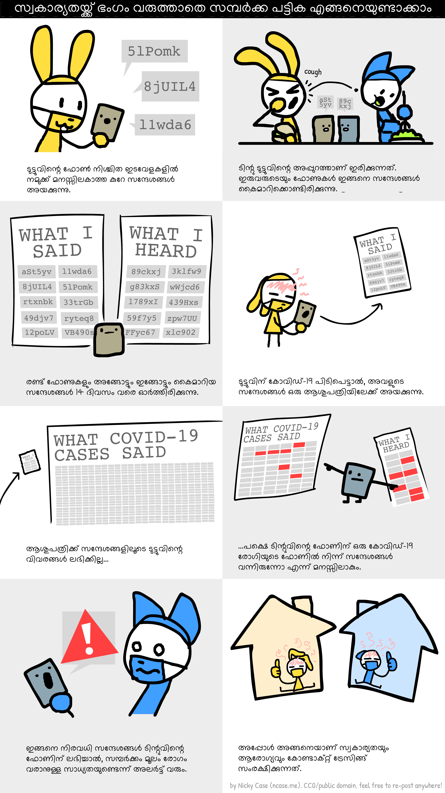
(ഇതിന്റെ മുഴുവൻ ചിത്രീകരണം ഇവിടെ ലഭ്യമാണ്. കബളിപ്പിക്കൽ"/ഫാൾസ് പോസിറ്റീവ്/തുടങ്ങിയവയെപ്പറ്റിയുള്ള വിവരങ്ങൾ ഇവിടെ വായിക്കാം:25)
ടിസിഎൻ പ്രോട്ടോക്കോൾ26, എംഐടി PACT27, എന്നിവയെപ്പോലുള്ള സമാന ടീമുകൾക്കൊപ്പം, സ്വകാര്യതയ്ക്ക് പ്രഥമ പരിഗണന നൽകുന്ന കോണ്ടാക്റ്റ് ട്രെയ്സിംഗ് ആൻഡ്രോയ്ഡ് / ഐ-ഓഎസിലേക്ക് നേരിട്ട് എത്തിക്കാൻ .28(ഗൂഗിളി / ആപ്പിളി - നെ വിശ്വസിക്കരുത് എന്നാണോ? കൊള്ളാം! ഈ സിസ്റ്റത്തിന്റെ ഭംഗിയെന്തെന്നാൽ ഇതിന് വിശ്വാസ്യത ആവശ്യമില്ല എന്നതാണ്!) താമസിയാതെ, നിങ്ങളുടെ പ്രാദേശിക പൊതുജനാരോഗ്യ ഏജൻസി നിങ്ങളോട് ഒരു അപ്ലിക്കേഷൻ ഡൗൺലോഡുചെയ്യാൻ ആവശ്യപ്പെട്ടേക്കാം. പൊതുവായി ലഭ്യമായ കോഡ് ഉപയോഗിക്കുന്നതും, സ്വകാര്യതയ്ക്ക് പ്രഥമ പരിഗണന നൽകുന്നതുമാണിതെങ്കിൽ, ദയവായി അത് ഇൻസ്റ്റാൾ ചെയ്യുക!
എന്നാൽ സ്മാർട് ഫോണുകളില്ലാത്ത ആളുകളെ സംബന്ധിച്ചെന്ത്? അഥവാ വാതിൽ പിടികളിലൂടെയുള്ള അണുബാധയോ? അല്ലെങ്കിൽ "ശരിയ്ക്കും" രോഗലക്ഷണമില്ലാത്ത കേസുകൾ? കോണ്ടാക്റ്റ് ട്രെയ്സിംഗ് അപ്ലിക്കേഷനുകൾക്ക് എല്ലാ രോഗ പകർച്ചകളും കണ്ടു പിടിക്കാൻ കഴിയില്ല ... എന്നാലത് കൊണ്ട് കുഴപ്പമില്ല! R < 1 ലഭിക്കാൻ നമുക്ക് എല്ലാ രോഗ പകർച്ചകളും കണ്ടൂ പിടിക്കേണ്ടതില്ല, 60 ശതമാനത്തിലധികം കേസുകൾ കണ്ടെത്തിയാൽ മതി.
(രോഗലക്ഷണം വരുന്നതിനു മുന്നെയുള്ള പകർച്ചയും, "ശരിയായ" ലക്ഷണങ്ങളില്ലാത്തവയും - "ശരിയായ" ലക്ഷണങ്ങളുള്ളവയും തമ്മിലുള്ള ആശയക്കുഴപ്പത്തെക്കുറിച്ചുള്ള അടിക്കുറിപ്പ് അപൂർണ്ണമാണ്:29)
രോഗലക്ഷണമുള്ള കേസുകൾ ഒറ്റപ്പെടുത്തുന്നത് R വില 40% വരെ കുറയ്ക്കും, കൂടാതെ അവരുടെ രോഗലക്ഷണം വരുന്നതിനും/ ശേഷവുമുള്ള കോൺടാക്റ്റുകളെ ക്വാറന്റൈൻ ചെയ്യുന്നത് R 50% വരെ കുറയ്ക്കും30:
അങ്ങിനെ, 100% കോണ്ടാക്ട് ക്വാറന്റൈനിങ്ങും. ലോക്ക്ഡൗണൂം ഇല്ലാതെ പോലും നമുക്ക് R < 1 ലഭിക്കും! നമ്മുടെ മാനസികവും സാമ്പത്തികവുമായ ആരോഗ്യത്തിനും വളരെ നല്ലത്. (സ്വയം ഒറ്റപ്പെടൽ / ക്വാറന്റൈൻ നടത്തേണ്ടിവരുന്ന ആളുകളുടെ സാമ്പത്തിക നഷ്ടത്തെ സംബന്ധിച്ചിടത്തോളം, സർക്കാരുകൾ അവരെ പിന്തുണയ്ക്കണം - ടെസ്റ്റുകൾക്ക് പണം നൽകുക, തൊഴിൽ സംരക്ഷണം, ശമ്പളത്തോടെയുള്ള അവധി മുതലായവ. ഇടയ്ക്കിടെയുള്ള ലോക്ക്ഡൗണിനേക്കാൾ ചെലവു കുറഞ്ഞത് ഇതായിരിക്കും.)
രോഗം ബാധിക്കാനിടയുള്ള
(കുറിപ്പ്: ഈ കാൽക്കുലേറ്റർ വാക്സിനുകൾ 100% ഫലപ്രദമാണെന്ന് സങ്കല്പിക്കുന്നു. വാസ്തവത്തിൽ, ഹെർഡ് ഇമ്മ്യൂണിറ്റി ലഭിക്കാൻ "ഹെർഡ് ഇമ്മ്യൂണിറ്റി" യഥാർത്ഥത്തിൽ ആവശ്യമുള്ള ആളുകളേക്കാൾ കൂടുതൽ പേർക്ക് വാക്സിനേഷൻ നൽകേണ്ടി വരും)
ശരി, സംസാരം മതിയാക്കാം. അതിന്റെ ഒരു സിമുലേഷൻ ഇതാ:
- കുറച്ച് മാസത്തെ ലോക്ക്ഡൗൺ, നമുക്ക് സാധിക്കുന്നത് വരെ...
- നമുക്ക് കഴിയുന്നതുവരെ "ടെസ്റ്റ്, ട്രേസ്, ഇൻസുലേറ്റ്" എന്നതിലേക്ക് മാറുന്നു...
- മതിയായ ആളുകൾക്ക് വാക്സിൻ കുത്തിവയ്പ് നൽകുക, അതിനർത്ഥം...
- നമ്മൾ ജയിച്ചു.
അത്രതന്നെ! അങ്ങിനെയാണ് നമ്മൾ ഈ വിമാനത്തിൽ എമർജൻസി ലാൻഡിംഗ് നടത്തുന്നത്.
അങ്ങനെയാണ് നമ്മൾ കോവിഡ്-19 നെ തോൽപ്പിക്കുന്നത്.
...
എന്നിട്ടും പണി പാളിയാലോ? ഇതിനകം തന്നെ കാര്യങ്ങൾ വളരെ മോശമായിക്കഴിഞ്ഞിരിക്കുന്നു. അതാണ് ഭയക്കേണ്ടത്, ഭയം നല്ലതാണ്! പിന്തുണയ്ക്കുള്ള പദ്ധതികൾ സൃഷ്ടിക്കാൻ ഭയം ഊർജ്ജം നൽകും.
അശുഭാപ്തിവിശ്വാസി പാരച്യൂട്ട് കണ്ടുപിടിക്കുന്നത് പോലെ.
സീൻ 4+: എല്ലാവർക്കും മാസ്കുകൾ, വേനൽക്കാലം, സർക്യൂട്ട് ബ്രേക്കറുകളും
R0 നമ്മൾ വിചാരിച്ചതിലും വളരെ ഉയർന്നതാണെങ്കിൽ, മുകളിൽ പറഞ്ഞ ഇടപെടലുകൾ, നേരിയ ശാരീരിക അകലം സൂക്ഷിച്ചാൽ പോലും, R < 1 ലഭിക്കാൻ പര്യാപ്തമല്ലെങ്കിലോ?
ഓർമിക്കുക, നമുക്ക് R < 1 നേടാൻ കഴിയുന്നില്ലെങ്കിലും, R കുറയ്ക്കുന്നത് മൊത്തം കേസുകൾ "കുതിച്ചുയരുന്നത്" കുറയ്ക്കുന്നത് വഴി ജീവൻ രക്ഷിക്കുന്നു. എന്നിട്ടും, R < 1 ആണ് അഭികാമ്യം എന്നതിനാൽ R കുറയ്ക്കുന്നതിനുള്ള മറ്റ് ചില വഴികൾ ഇതാ:
എല്ലാവർക്കും മാസ്ക്കുകൾ:
"നിൽക്കൂ, മാസ്കുകൾ ഒരാൾ രോഗിയാകുന്നത് തടയില്ലെന്ന് ഞാൻ വിചാരിച്ചു?" എന്ന വാദം നിങ്ങൾ ഉന്നയിച്ചേക്കാം.
നിങ്ങൾ പറഞ്ഞത് ശരിയാണ്. മാസ്കുകൾ ഒരാൾക്ക് അസുഖം വരുന്നത് തടയുന്നില്ല31... അവ ഒരാൾ മറ്റുള്ളവർക്ക് അസുഖം നൽകുന്നതാണ് തടയുന്നത്.
പക്ഷെ നിൽക്കൂ - നിസ്സാരമായ ഒരു തുണിക്കഷ്ണത്തിനെങ്ങിനെ തുള്ളികൾ ഒരു ദിശയിലേക്ക് പോവുന്നത് തടയാനാവും, മറുവശത്തേക്ക് പറ്റില്ല? ഉത്തരം വളരെ ലളിതമാണ്:
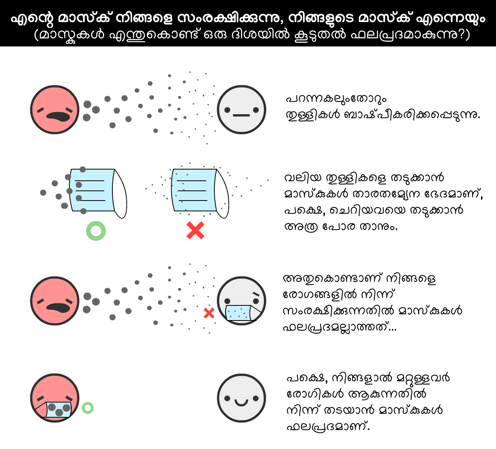
ഒരു കണക്കിനു വേണ്ടി: ശസ്ത്രക്രിയാ മാസ്കുകൾ പകർച്ചവ്യാധി ഉള്ള ആൾ വയ്ക്കുന്നത് വായുകണികകളിലെ ജലദോഷം, ഫ്ലൂ വൈറസുകളുടെ എണ്ണം 70% കണ്ട് കുറയ്ക്കുന്നു.32 രോഗം പകരുന്നത് 70% കുറയ്ക്കുന്നത് ഒരു ലോക്ക്ഡൗൺ പോലെ വലിയ സ്വാധീനം ചെലുത്തും!
എന്നിരുന്നാലും, കോവിഡ്-19 ൽ മാസ്കുകളുടെ മാത്രം സ്വാധീനം എത്രയുണ്ടെന്ന് നമുക്ക് അറിയില്ല. ശാസ്ത്രത്തിൽ, നിങ്ങൾക്ക് 95% ഉറപ്പുണ്ടെങ്കിൽ മാത്രമേ ഒരു കണ്ടെത്തൽ പ്രസിദ്ധീകരിക്കാവൂ. (... അങ്ങിനെ നിങ്ങൾക്കുറപ്പുള്ള കാര്യങ്ങൾ തീർച്ചയായും പ്രസിദ്ധീകരിക്കണം.33) 2020 മെയ് 1 ലെ സ്ഥിതി വച്ച് മാസ്കുകൾ രോഗം തടയുമെന്നത് "95% ഉറപ്പാണ്" എന്ന് പറയാനാവില്ല.
എന്നിരുന്നാലും, മഹാമാരികൾ ചൂതാട്ടം പോലെയാണ്. നിങ്ങൾക്ക് 95% ഉറപ്പുണ്ടെങ്കിൽ മാത്രം പന്തയം വയ്ക്കുക, എന്നാലും നിങ്ങൾക്ക് എല്ലാം നഷ്ടമാകും. ബ്രിട്ടീഷ് മെഡിക്കൽ ജേണലിൽ വന്ന മാസ്കുകളെക്കുറിച്ചുള്ള ഒരു സമീപകാല ലേഖനം34, നമ്മൾ അനിശ്ചിതത്വത്തിന്റെ കാലത്ത് ചെലവും/മെച്ചവും സംബന്ധിച്ച വിശകലനങ്ങൾ നടത്തേണ്ടതുണ്ട് എന്ന് പറയുന്നു. ഇതുപോലെ:
ചെലവ്: ഭവനങ്ങളിൽ നിർമ്മിച്ച തുണി മാസ്കുകൾ (ശസ്ത്രക്രിയാ മാസ്കുകളുടെ35 2/3 ഫലപ്രദമാണ്), വിലകുറഞ്ഞതാണ്. ശസ്ത്രക്രിയാ മാസ്കുകൾ ഇവയേക്കാൾ വിലയേറിതാണെങ്കിലും, നമുക്ക് താങ്ങാവുന്ന വിലയിൽ ലഭ്യമാണ്.
മെച്ചം: ശസ്ത്രക്രിയാ മാസ്കുകൾ 0% അല്ലെങ്കിൽ 70% പകർച്ച കുറയ്ക്കുന്നതിനുള്ള സാധ്യത 50-50 ആണെങ്കിലും, ശരാശരി "പ്രതീക്ഷിച്ച മൂല്യം" ഇപ്പോഴും 35% ആണ്, ഇത് പകുതി ലോക്ക്ഡൗണിന് തുല്യമാണ്! അതിനാൽ, ശസ്ത്രക്രിയാ മാസ്കുകൾ R നെ 35% വരെ കുറയ്ക്കുന്നു എന്ന്, നമ്മുടെ അനിശ്ചിതത്വം നൽകുന്ന കിഴിവ് പരിഗണിച്ച്, നമുക്ക് ഊഹിക്കാം. (വീണ്ടും, സ്ലൈഡറുകൾ മുകളിലേക്കും താഴേക്കും തിരിക്കുന്നതിലൂടെ നിങ്ങൾക്ക് ഞങ്ങളുടെ അനുമാനങ്ങളെ വെല്ലുവിളിക്കാൻ കഴിയും)
(മാസ്കുകൾക്കായുള്ള / എതിരായ മറ്റ് വാദങ്ങൾ:36)
മാസ്കുകൾക്ക് മാത്രം R < 1 ആക്കില്ല. പക്ഷേ, ഹാൻഡ് വാഷിംഗ്, "ടെസ്റ്റ്, ട്രേസ്, ഐസോലേറ്റ്" നമ്മളെ R = 1.10 ലേക്ക് മാത്രമേ എത്തിക്കൂ, വെറും മൂന്നിലൊന്നാളുകൾ മാസ്ക് ധരിക്കുന്നത് R < 1 നയിക്കും, വൈറസിനെ നമ്മൾ പിടിച്ച് കെട്ടിയിരിക്കുന്നു!
വേനൽക്കാലം:
ശരി, ഇത് നമുക്ക് നിയന്ത്രിക്കാൻ കഴിയുന്ന ഒരു "ഇടപെടൽ" അല്ല, പക്ഷേ ഇത് സഹായകരമാണ്! കോവിഡ്-19ലേക്ക് വേനൽക്കാലം ഒന്നും ചെയ്യില്ലെന്ന് ചില വാർത്താ ഏജൻസികൾ റിപ്പോർട്ട് ചെയ്യുന്നു. അവ പകുതി ശരിയാണ്: വേനൽക്കാലം R < 1 ആക്കില്ല, പക്ഷേ അത് R കുറയ്ക്കും.
COVID-19നായി, ഓരോ 1° സെൽഷ്യസ് (1.8° ഫാരൻഹീറ്റ്) താപ വർദ്ധനവും R വില 1.2% കുറയ്ക്കുന്നു.37 ന്യൂയോർക്ക് നഗരത്തിലെ വേനൽ-ശൈത്യകാല വ്യത്യാസം 26° സെൽഷ്യസ് (47° F) ആണ് 38, അതിനാൽ വേനൽക്കാലം R ഏകദേശം 31% കുറയ്ക്കും.
വേനൽക്കാലം മാത്രം R < 1 സൃഷ്ടിക്കില്ല, പക്ഷേ നമുക്ക് പരിമിതമായ ശേഷിയുണ്ടെങ്കിൽ, വേനൽക്കാലത്ത് നമുക്ക് ചില ഇടപെടലുകൾ കുറയ്ക്കാൻ കഴിയും - അങ്ങിനെ ശൈത്യകാലത്ത് നമുക്ക് അവയെ ഉയർന്ന തോതിൽ നടപ്പാക്കാൻ കഴിയും.
ഒരു "സർക്കീട്ട് ബ്രേക്കർ" ലോക്ക്ഡൗൺ:
നമ്മളീ ചെയ്തതെല്ലാം R < 1 ലഭിക്കാൻ ഇപ്പോഴും പര്യാപ്തമല്ലെങ്കിൽ ... നമുക്ക് മറ്റൊരു ലോക്ക്ഡൗൺ ചെയ്യാം.
എന്നാൽ നമ്മൾ 2 മാസം അടച്ച് / 1 മാസം തുറന്ന് അതിങ്ങനെ ആവർത്തിക്കണമെന്നില്ല! R കുറഞ്ഞതിനാൽ, ഒരു വാക്സിൻ ലഭ്യമാകുന്നതിന് മുമ്പ് നമുക്ക് ഒന്നോ രണ്ടോ "സർക്യൂട്ട് ബ്രേക്കർ" ലോക്ക്ഡൗണുകൾ മാത്രമേ ആവശ്യമുള്ളൂ. (4 മാസത്തേക്ക് കോവിഡ്-19 "നിയന്ത്രിച്ചിട്ടും" സിംഗപ്പൂരിന് ഇത് അടുത്തിടെ ചെയ്യേണ്ടിവന്നു. അത് പരാജയമല്ല: മറിച്ച് വിജയത്തിനാവശ്യമുള്ളതാണത്.)
ഒരു "അലസമായി വിട്ടുകളയാവുന്ന" സാഹചര്യത്തിന്റെ സിമുലേഷൻ ഇതാ:
- ലോക്ക്ഡൗൺ, ശേഷം
- മിതമായ അളവിലുള്ള ശുചിത്വവും "ടെസ്റ്റ്, ട്രേസ്, ഇൻസുലേറ്റ്", കൂടാതെ മിതമായ അളവിൽ "എല്ലാവർക്കും മാസ്കുകൾ", പിന്നെ ...
- ഒരു വാക്സിൻ കണ്ടെത്തുന്നതിനുമുമ്പ് ഒരു "സർക്യൂട്ട് ബ്രേക്കർ" ലോക്ക്ഡൗൺ കൂടി.
R നെ താഴേക്ക് താഴ്ത്താൻ നമുക്ക് ചെയ്യാവുന്ന മറ്റ് ഇടപെടലുകളെക്കുറിച്ചും പരാമർശിക്കാതിരിക്കാനാവില്ല:
- യാത്രാ നിയന്ത്രണങ്ങൾ /ക്വാറന്റൈൻ
- മാളുകളിലും സ്കൂളുകളിലും ആളുകളൂടെ താപനില പരിശോധന
- പൊതു ഇടങ്ങൾ നന്നായി വൃത്തിയാക്കൽ
- ഹാൻഡ് ഷേക്ക് നൽകുന്നതിനു പകരം കാലുകൾ മുട്ടിക്കുന്നത്
- മനുഷ്യന്റെ ഭാവനയ്ക്ക് മറ്റെന്തെല്ലാം കൊണ്ടുവരാൻ കഴിയുമോ അതെല്ലാം
. . .
ഈ പദ്ധതികൾ നിങ്ങൾക്ക് പ്രതീക്ഷ നൽകുമെന്ന് ഞങ്ങൾ പ്രതീക്ഷിക്കുന്നു..
അശുഭാപ്തികരമായ ഒരു സാഹചര്യത്തിൽപ്പോലും, നമ്മുടെ മാനസികവും സാമ്പത്തികവുമായ ആരോഗ്യം സംരക്ഷിച്ചുകൊണ്ട് തന്നെ കോവിഡ്-19നെ തോൽപ്പിക്കാൻ കഴിയും. ലോക്ക്ഡൗൺ ഒരു "റീസെറ്റ് ബട്ടൺ" ആയി ഉപയോഗിക്കുക, കേസ് ഐസൊലേഷൻ + സ്വകാര്യത പരിരക്ഷിക്കുന്ന കോൺടാക്റ്റ് ട്രെയ്സിങ്ങ് + എല്ലാവർക്കുമായി കുറഞ്ഞത് തുണി മാസ്കുകളെങ്കിലും ഉപയോഗിച്ച് R < 1 ആയി നിലനിർത്തുക ... അങ്ങിനെ ജീവിതത്തിന് ഒരു സാധാരണ മട്ടിലേക്ക് മടങ്ങാൻ കഴിയും!
തീർച്ചയായും, നിങ്ങളുടെ കൈകൾ ശുഷ്ക്കിച്ചതാകാം. എന്നാലും നിങ്ങൾക്ക് ഒരു കോമിക്സ് പുസ്തകശാലയിലേക്ക് സുഹൃത്തിനെ ക്ഷണിക്കാൻ കഴിയും! ഏറ്റവും പുതിയ ഹോളിവുഡ് ബ്ലോക്ക്ബസ്റ്റർ ചിത്രം കാണുന്നതിന് നിങ്ങൾ സുഹൃത്തുക്കളുമായി പുറത്തുപോകും. നിങ്ങൾക്ക് ഒരു ലൈബ്രറിയിൽ ആളുകളെ നിരീക്ഷിക്കാം, ജീവനോടെയിരിക്കുന്നുവെന്ന ലളിതമായ കാര്യത്തേക്കുറിച്ച് ആളുകൾ സംസാരിക്കുന്നതിൽപോലും നിങ്ങൾ സന്തോഷം കണ്ടെത്തും.
ഏറ്റവും മോശം അവസ്ഥയിൽ പോലും ... ജീവിതം നിലനിൽക്കും.
അങ്ങിനെയ്ങ്കിൽ ഇപ്പോൾ, വളരെ മോശമായ ചില മോശം സാഹചര്യങ്ങൾക്കായി നമുക്ക് ആസൂത്രണം ചെയ്യാം.
വാട്ടർ ലാൻഡിംഗ് ആണ്, നിങ്ങളുടെ ലൈഫ് ജാക്കറ്റ് എടുക്കൂ, എന്നിട്ട് എമർജൻസി വാതിലുകളിലേക്കുള്ള ലൈറ്റുകൾ പിന്തുടരൂ:
നിങ്ങൾക്ക് കോവിഡ്-19 ലഭിക്കുകയും, സുഖമാകുകയും ചെയ്യുന്നു. അല്ലെങ്കിൽ നിങ്ങൾക്ക് കോവിഡ്-19 വാക്സിൻ ലഭിക്കുന്നു. ഏതുവിധേനയും, നിങ്ങൾ ഇപ്പോൾ പ്രതിരോധശേഷിയുള്ളവരാണ് ...എത്രനാളത്തേക്ക്?
- കോവിഡ്-19, സാർസുമായി വളരെ അടുത്ത ബന്ധമുള്ളതാണ്, അത് അതിജീവിച്ചവർക്ക് 2 വർഷത്തെ പ്രതിരോധശേഷി ലഭിക്കുകയുണ്ടായി. 39
- ജലദോഷത്തിന് കാരണമാകുന്ന കൊറോണ വൈറസുകൾ നിങ്ങൾക്ക് 8 മാസത്തെ പ്രതിരോധശേഷി നൽകുന്നു.40
- കോവിഡ്-19ൽ നിന്ന് ആളുകൾ സുഖം പ്രാപിച്ചതിനെ തുടർന്ന് വീണ്ടും പോസിറ്റീവാകുന്നതായി റിപ്പോർട്ടുകൾ ഉണ്ട്, പക്ഷേ ഇവ തെറ്റായ പോസിറ്റീവ് ആണോ എന്ന് വ്യക്തമല്ല.41
- കുരങ്ങുകളിൽ നടത്തിയ, ഇതുവരെ പീയർ അവലോകനം ചെയ്യാത്ത ഒരു പഠനത്തിൽ കോവിഡ്-19 കൊറോണ വൈറസിന് എതിരെ കുറഞ്ഞത് 28 ദിവസമെങ്കിലും പ്രതിരോധശേഷി ലഭിച്ചതായി പറയുന്നു.42
പക്ഷെ 2020 മെയ് 1 ലെ കണക്കനുസരിച്ച്, മനുഷ്യരിൽ കോവിഡ്-19 ന് "എത്ര നാൾ" പ്രതിരോധശേഷി ലഭിക്കുമെന്നത് അജ്ഞാതമാണ്.
ഈ സിമുലേഷനുകൾക്ക്, ഒരു വർഷ കാലാവധി നമുക്കനുമാനിക്കാം. ഇതാ ഒരു സിമുലേഷൻ, 100%
എക്സ്പോണൻഷ്യൽ ഡീകെയുടെ മടങ്ങിവരവ്!
ഇതാണ് എസ്ഇഐആർഎസ് മാതൃക (SEIRS model). അവസാനത്തെ "S" രോഗം വീണ്ടൂം പിടിപെടാൻ ഇടയുള്ളവരെ

ഇനി, നമുക്ക് ഒരു കോവിഡ്-19 വിസ്ഫോടനം സിമുലേറ്റ് ചെയ്യാം, 10 വർഷത്തിലധികം, യാതൊരു ഇടപെടലുകളും ഇല്ലാതെ ... പ്രതിരോധശേഷി ഒരു വർഷം മാത്രം നീണ്ടുനിൽക്കുന്നെങ്കിൽ:
മുമ്പത്തെ സിമുലേഷനുകളിൽ, നമുക്ക് ഐസിയു പരിധി കടക്കുന്ന ഒരു സ്പൈക്ക് മാത്രമേ ഉണ്ടായിരുന്നുള്ളൂ. ഇപ്പോൾ, നമുക്ക്
R = 1, ഇത് പ്രാദേശികമായി ഒതുങ്ങിനിൽക്കുന്ന ഒന്നായിരിക്കുന്നു.
നമുക്ക് നന്ദി പറയാം, വേനൽക്കാലം R കുറയ്ക്കുന്നതിനാൽ, ഇത് സാഹചര്യം മെച്ചപ്പെടുത്തും:
ഓ!,
വിധിവൈപരീത്യമെന്നപോലെ, വേനൽക്കാലം രോഗത്തിന്റെ കുതിപ്പിനെ മോശം അവസ്ഥയിലേക്കെത്തിക്കുകയും അവരെ ഒരു പതിവാക്കുകയും ചെയ്യുന്നു! വേനൽക്കാലം പുതിയ
ആശ്വാസമെന്തെന്നാൽ, ഇതിനുള്ള പരിഹാരം വളരെ ലളിതമാണ് - ഫ്ലൂ ഷോട്ടുകൾ പോലെ, എല്ലാ ഇലപൊഴിയും കാലത്തും/ ശൈത്യകാലത്തും ആളുകൾക്ക് വാക്സിനേഷൻ നൽകുക:
(റെക്കോർഡിംഗ് പ്ലേ ചെയ്ത ശേഷം, നിങ്ങളുടെ സ്വന്തം വാക്സിനേഷൻ കാമ്പെയ്നുകൾ സിമുലേറ്റ് ചെയ്യാൻ ശ്രമിക്കുക! നിങ്ങൾക്ക് എപ്പോൾ വേണമെങ്കിലും സിമുലേഷൻ താൽക്കാലികമായി നിർത്താനോ തുടരാനോ കഴിയുമെന്ന് ഓർമ്മിക്കുക)
എന്നാൽ ഭയപ്പെടുത്തുന്ന ചോദ്യം ഇതാ:
വർഷങ്ങളോളം വാക്സിൻ ഇല്ലെങ്കിൽ എന്തുചെയ്യും? ഇനി ഒരിക്കലും ഉണ്ടായില്ലെങ്കിൽ?
വ്യക്തമായി പറഞ്ഞാൽ: ഇതിന് സാധ്യതയില്ല. മിക്ക എപ്പിഡെമിയോളജിസ്റ്റുകളും 1 മുതൽ 2 വർഷത്തിനുള്ളിൽ ഒരു വാക്സിൻ പ്രതീക്ഷിക്കുന്നു. തീർച്ചയായും, മറ്റൊരു കൊറോണ വൈറസിനും ഇത് വരെ ഒരു വാക്സിൻ ഉണ്ടായിട്ടില്ല, പക്ഷേ അതിനു കാരണം സാർസ് (SARS) വേഗത്തിൽ ഇല്ലാതാക്കപ്പെട്ടതും, കൂടാതെ "ജലദോഷത്തിനു" വാക്സിനുണ്ടാക്കുന്നത് നിക്ഷേപത്തിന് മുതലാകില്ലാത്തതുമാണ്.
എന്നിട്ടും, പകർച്ചവ്യാധി ഗവേഷകർ ആശങ്ക പ്രകടിപ്പിക്കുന്നുണ്ട്: നമുക്ക് വേണ്ടത്ര നിർമ്മിക്കാൻ കഴിയുന്നില്ലെങ്കിലോ?43 ധൃതി പിടിച്ച് നമ്മൾ വാക്സിനുണ്ടാക്കിയിട്ട്, അത് സുരക്ഷിതമല്ലെങ്കിലോ?44
"വാക്സിൻ ഇല്ല" എന്ന പേടിസ്വപ്നം ഉള്ളപ്പോൾ പോലും, നമുക്ക് ഇപ്പോഴും 3 രക്ഷാ വഴികളുണ്ട്. ഏറ്റവും സുരക്ഷിതമായത് മുതൽ ഭയാനകം വരെ:
"സ്വാഭാവിക പ്രതിരോധശേഷി" കൈവരിക്കാൻ ഇടയ്ക്കിടെ, അല്ലെങ്കിൽ അയഞ്ഞ R < 1 ഇടപെടലുകൾ നടത്തുക. (മുന്നറിയിപ്പ്: ഇത് നിരവധി മരണങ്ങൾക്കും, ശ്വാസകോശങ്ങൾ കേടുവരുന്നതിനും ഇടയാക്കും. കൂടാതെ, പ്രതിരോധശേഷി നിലനിൽക്കുന്നില്ലെങ്കിൽ ഇത് പ്രവർത്തിക്കില്ല.)
R < ഇടപെടലുകൾ എല്ലാക്കാലവും ചെയ്യുക. എച്ച്ഐവിക്ക് ശേഷമുള്ള ലോകത്ത് എസ്ടിഐ പരിശോധനകളും കോണ്ടം ധരിക്കുന്നതും ഒരു പുതിയ മാനദണ്ഡമായി മാറിയത് പോലെ, കോവിഡ് -19 ന് ശേഷമുള്ള ലോകത്ത് കോൺടാക്റ്റ് ട്രെയ്സിംഗും, മാസ്കുകൾ ധരിക്കുന്നതും ഒരു പുതിയ മാനദണ്ഡമായി മാറും.
കോവിഡ്-19ന് ഗുരുതരമായ പരിചരണം ആവശ്യമില്ലാത്ത ചികിത്സകൾ വികസിപ്പിക്കുന്നതുവരെ R < 1 ഇടപെടലുകൾ നടത്തുക. (എന്തായാലും നമ്മൾ ഇത് ചെയ്യണം!) ഐസിയു ഉപയോഗം പത്തിലൊന്നായി കുറയ്ക്കുന്നത് നമ്മുടെ ഐസിയു ശേഷി 10 മടങ്ങ് വർദ്ധിപ്പിക്കുന്നതിന് തുല്യമാണ്:**
ശാശ്വതമായ പ്രതിരോധശേഷി, വാക്സിൻ, ഇടപെടലുകൾ ഇവയൊന്നുമില്ലാത്ത സാഹചര്യത്തിലുള്ള ഒരു സിമുലേഷൻ ഇതാ - ദീർഘകാല വർദ്ധനവുകളെ അതിജീവിക്കാനുള്ള ശേഷി സാവധാനം വർദ്ധിപ്പിക്കുന്നു:
ഏറ്റവും മോശമായ അവസ്ഥയിലും... ജീവൻ പരിപാലിപ്പിക്കപ്പെടും.
. . .
നിങ്ങൾക്ക് ഞങ്ങളുടെ നിഗമനങ്ങളെ ചോദ്യം ചെയ്യണമെന്നോ തിരുത്തണമെന്നോ തോന്നുന്നുണ്ടാവാം, R0കൾക്കും മറ്റ് സംഖ്യകളുടെ മൂല്യങ്ങൾക്കും വ്യത്യസ്ത വിലകൾ നൽകണമെന്നും. അല്ലെങ്കിൽ നിങ്ങളൂടെ സ്വന്തം ഇടപെടൽ പദ്ധതികളുടെ മിശ്രണം പരീക്ഷിക്കണമെന്നുണ്ടാവും!
ഇതാ ഒരു (ആവശ്യമെങ്കിൽ ഉപയോഗിക്കാവുന്ന) സാൻഡ്ബോക്സ് മോഡ്, ലഭ്യമായ എല്ലാം ഇതിലുണ്ട്. (എല്ലാ കണ്ട്രോളൂകളും കാണാൽ സ്ക്രോൾ ചെയ്ത് നോക്കൂ) നിങ്ങളുടെ ഹൃദയത്തിലുള്ളതെല്ലാം സിമുലേറ്റ് ചെയ്ത് നോക്കൂ:
ഈ ലളിതമായ "എപിഡെമിക് ഫ്ലൈറ്റ് സിമുലേറ്റർ" നമ്മളെ വളരെയധികം കാര്യങ്ങൾ പഠിപ്പിച്ചു. കഴിഞ്ഞ ഏതാനും മാസങ്ങൾ, വരാൻ പോകുന്ന കുറെ മാസങ്ങൾ, വർഷങ്ങൾ ഇവയെയെല്ലാം പറ്റിയുള്ള ചോദ്യങ്ങൾക്കുത്തരം കണ്ടെത്താൻ അത് നമ്മളെ സഹായിച്ചു.
അങ്ങിനെയെങ്കിൽ അവസാനമായി, നമുക്ക് തിരിച്ചു പോകാം...
വിമാനം മുങ്ങിക്കഴിഞ്ഞു. നമ്മൾ രക്ഷാവഞ്ചികളിൽ വലിഞ്ഞു കയറിക്കഴിഞ്ഞു. കര തേടേണ്ട സമയമാണിത്.45
എപിഡെമിയോളജിസ്റ്റുകളും ഭരണകർത്താക്കളും (ഇടതും, വലതും, and മദ്ധ്യ-വർത്തികളും) നമ്മുടെ ജീവനും, സ്വാതന്ത്ര്യവും സംരക്ഷിക്കുന്നതിനൊപ്പം തന്നെ, കോവിഡ്-19നെ എങ്ങിനെ നേരിടണമെന്ന കാര്യത്തിൽ ഒരു അഭിപ്രായസമന്വയത്തിലെത്തിക്കഴിഞ്ഞു.
അതിന്റെ ഒരു ഏകദേശ രൂപം ഇതാ, (അല്പം-അഭിപ്രായവ്യത്യാസങ്ങളുള്ള) ചില ബാക്കപ്പ് പ്ലാനുകൾക്കൊപ്പം:
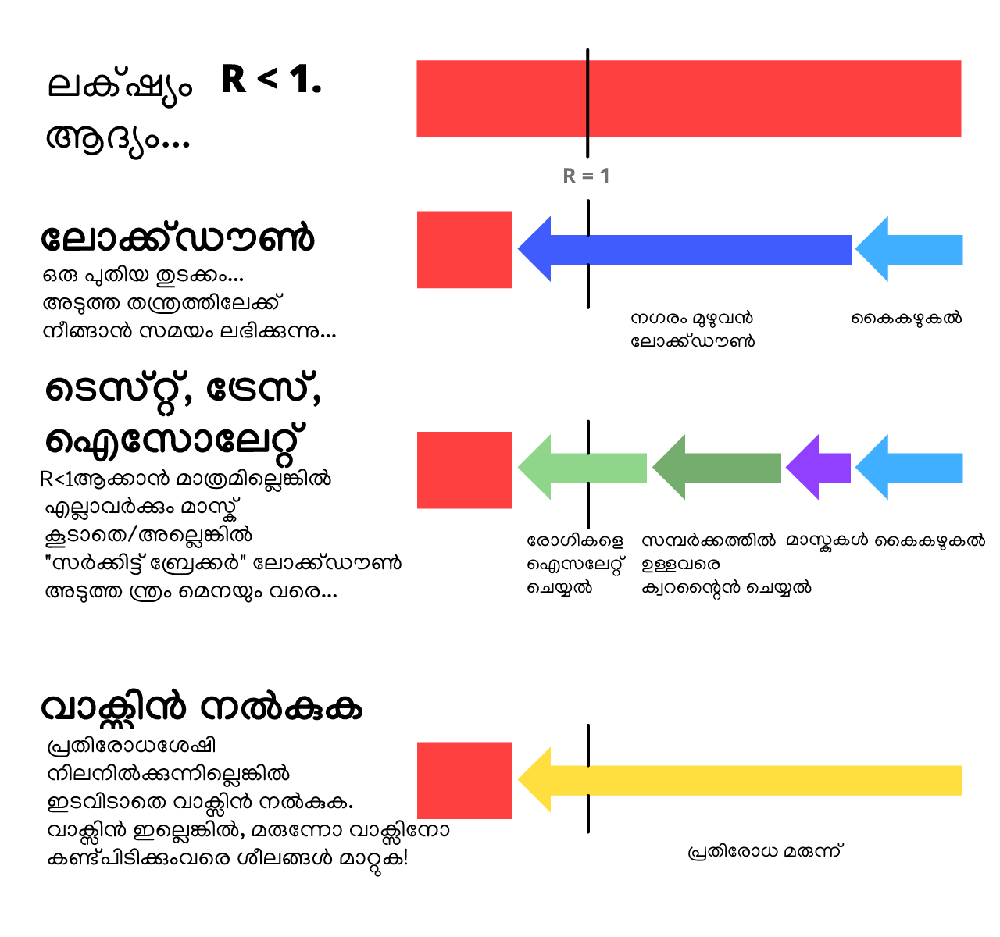
ഇപ്പോൾ, നിങ്ങളെ സംബന്ധിച്ച് എന്താണിതിന്റെയെല്ലാം അർത്ഥം?
ഏല്ലാവരും: ലോക്ക്ഡൗണിന്റെ ഒന്നാം ഘട്ടം വളരെ വേഗം അതിജീവിക്കാൻ അതിനു വേണ്ട പരിഗണന നൽകൂ. കൈ കഴുകുക ഒരു സ്ഥിരം ഏർപ്പാടാക്കൂ. സ്വന്തം ആവശ്യത്തിനുള്ള മാസ്കുകൾ സ്വയം ഉണ്ടാക്കൂ. സ്വകാര്യത സംരക്ഷിക്കുന്ന ഒരു കോണ്ടാക്ട് ട്രേസിങ്ങ് ആപ്പ്, അത് ലഭ്യമാകുന്ന മുറയ്ക്ക് ഡൗൺലൊഡ് ചെയ്യൂ. ശാരീരിക, മാനസിക ആരോഗ്യം കാത്ത് സൂക്ഷിക്കൂ! നിങ്ങളുടെ പ്രാദേശിക ഭരണകർത്താക്കളോട് സജീവമായിരിക്കാൻ പറയൂ...
ആസൂത്രകരോട്: സ്വയം ഐസോലേറ്റ് ചെയ്യേണ്ടവർക്കും, ക്വാറന്റീൻ ചെയ്യുന്നവർക്കുമായി നിയമ നിർമ്മാണം നടത്തു. കോണ്ടാക്ട് ട്രേസ് ചെയ്യാൻ ആവശ്യമുള്ള സഹായികളെ നിയമിക്കൂ, അവർക്ക് സഹായത്തിനായി സ്വകാര്യത കാത്തുസൂക്ഷിക്കുന്ന കോണ്ടാക്ട് ട്രേസിങ്ങ് ആപ്പുകൾ ലഭ്യമാക്കൂ. നമ്മൾ ഇപ്പോൾ നിർമ്മിക്കേണ്ട കാര്യങ്ങൾക്കായി കൂടുതൽ പണം ലഭ്യമാക്കൂ, ഉദാഹരണമായി...
നിർമ്മാക്കൾക്ക്: ടെസ്റ്റുകൾ ഉണ്ടാക്കൂ. വെന്റിലേറ്ററുകളുണ്ടാക്കൂ. ആശുപത്രികൾക്കായി പേഴ്സണൽ പ്രൊട്ടക്ഷൻ എക്വിപ്പ്മെന്റുകൾ (PPE) നിർമ്മിക്കൂ. മാസ്കുകളുണ്ടാക്കൂ. ആപ്പുകളും. ആന്റിവൈറൽ മരുന്നുകളുണ്ടാക്കൂ, പ്രൊഫൈലാക്റ്റിക്കുകൾ, വാക്സിനുകളും ആന്റിവൈറൽ മരുന്നുകളുമല്ലാത്തവയും ഉണ്ടാക്കൂ. വാക്സിനുകൾ ഉണ്ടാക്കൂ. ടെസ്റ്റുകൾ ഉണ്ടാക്കൂ. ടെസ്റ്റുകൾ ഉണ്ടാക്കൂ. ടെസ്റ്റുകൾ ഉണ്ടാക്കൂ. പ്രത്യാശ നിർമ്മിക്കൂ.
ഭയാശങ്കകളെ മാറ്റി വച്ച് പ്രത്യാശയുണ്ടാക്കാതിരിക്കൂ. നമ്മുടെ ഭയം നമ്മുടെ പ്രതീക്ഷകളോടൊപ്പം ഒത്ത് ചേർന്ന്, വിമാനം സൃഷ്ടിച്ചവരും, പാർച്ച്യൂട്ടുണ്ടാക്കിയവരും ഒന്നു ചേർന്നത് പോലെ. ഭയപ്പെടുത്തുന്നൊരു ഭാവിയെ മുന്നിൽ കണ്ടൊരുങ്ങുന്നതിലൂടെയാണ് നാം പ്രത്യാശാഭരിതമായ ഒരു ഭാവിയെ സൃഷ്ടിക്കുന്നത്.
ഭയത്തെ മാത്രമേ ഭയക്കേണ്ടതുള്ളൂ എന്ന ആശയത്തെ മാത്രമേ നമ്മൾ ഭയക്കേണ്ടതുള്ളൂ.
ഈ ഫുട്നോട്ടുകൾ സൂചികകളും, ലിങ്കുകളും, അധികമായുള്ള കമന്ററികളും നൽകും. ഈ കമന്ററി പോലുള്ളവ!
ഈ വിവരണം 2020 മേയ് മാസം ഒന്നിനു പ്രസിദ്ധീകരിച്ചതാണ്. ഇതിലെ മിക്ക കാര്യങ്ങളും കാലഹരണപ്പെടാം, പക്ഷെ, ഈ വിവരണം 95% സാധ്യമായ ഭാവിയും വിവരിക്കുമെന്ന് ഞങ്ങൾക്കുറപ്പാണ്, എപ്പിഡെമിയോളജി ബാലപാഠങ്ങൾ ഉപയോഗപ്രദമായിരിക്കുമെന്നും.
(Update May 15: Added citations for "1 in 20 of infected are hospitalized" and "0.5% of infected die")↩︎
“The mean [serial] interval was 3.96 days (95% CI 3.53–4.39 days)”. Du Z, Xu X, Wu Y, Wang L, Cowling BJ, Ancel Meyers L (മുന്നറിയിപ്പ്: മുന്നെയുള്ള പതിപ്പുകൾ കണക്കിലെടൂത്തിട്ടില്ല.)↩︎
ഓർമ്മിക്കുക: ഈ സിമുലേഷനുകളെല്ലാം പഠനാവശ്യത്തിനായി ലളിതമാക്കിയതാണ്.
One simplification: When you tell this simulation "Infect 1 new person every X days", it's actually increasing # of infected by 1/X each day. Same for future settings in these simulations – "Recover every X days" is actually reducing # of infected by 1/X each day.
Those aren't exactly the same, but it's close enough, and for educational purposes it's less opaque than setting the transmission/recovery rates directly.↩︎
“The median communicable period [...] was 9.5 days.” Hu, Z., Song, C., Xu, C. et al Yes, we know "median" is not the same as "average". For simplified educational purposes, close enough.↩︎
For more technical explanations of the SIR Model, see the Institute for Disease Modeling and Wikipedia↩︎
SEIR മോഡൽ സംബന്ധിച്ച സാങ്കേതിക വിശദീകരണങ്ങൾക്കായി, സന്ദർശിക്കുക the Institute for Disease Modeling and Wikipedia↩︎
“Assuming an incubation period distribution of mean 5.2 days from a separate study of early COVID-19 cases, we inferred that infectiousness started from 2.3 days (95% CI, 0.8–3.0 days) before symptom onset” (translation: Assuming symptoms start at 5 days, infectiousness starts 2 days before = Infectiousness starts at 3 days) He, X., Lau, E.H.Y., Wu, P. et al.↩︎
“The median R value for seasonal influenza was 1.28 (IQR: 1.19–1.37)” Biggerstaff, M., Cauchemez, S., Reed, C. et al. ക↩︎
“We estimated the basic reproduction number R0 of 2019-nCoV to be around 2.2 (90% high density interval: 1.4–3.8)” Riou J, Althaus CL.↩︎
“we calculated a median R0 value of 5.7 (95% CI 3.8–8.9)” Sanche S, Lin YT, Xu C, Romero-Severson E, Hengartner N, Ke R.↩︎
ഇതിൽ ഒരാൾ തനിക്ക് "രോഗം പകർന്ന് കൊടുക്കാൻ കഴിയുന്ന കാലം" മുഴുവൻ ഒരേ തീവ്രതയോടെ അത് ചെയ്യുന്നു എന്ന് നമ്മൾ അനുമാനിക്കുന്നു. വീണ്ടൂം, നമ്മൾ, എളുപ്പം മനസ്സിലാക്കാനായി കാര്യം അല്പം ലളിതമാക്കി.↩︎
ഓർമ്മിക്കുക R = R0 * നടക്കുന്ന വ്യാപനത്തിന്റെ അനുപാതം. ഇതോടൊപ്പം ഓർക്കുക = 1 - വ്യാപനത്തിന്റെ അനുപാതം തടഞ്ഞത്
Therefore, to get R < 1, you need to get R0 * TransmissionsAllowed < 1.
Therefore, TransmissionsAllowed < 1/R0
Therefore, 1 - TransmissionsStopped < 1/R0
Therefore, TransmissionsStopped > 1 - 1/R0
Therefore, you need to stop more than 1 - 1/R0 of transmissions to get R < 1 and contain the virus!↩︎
[UPDATED MAY 15] Many of you rightly pointed out that our previous citation for "1 in 20 need hospitalization" was based off old USA data on confirmed cases – which was way lower than the real number of cases, due to lack of tests.
So, let's look at the country with the most tests per capita: Iceland. On May 15th, 2020, they had 115 hospitalized among 1802 confirmed cases ≈ 6.4% hospitalization rate, or 1 in 16.
A more recent study of COVID-19 in France – using not just official confirmed cases but also antibody test data – found that “3.6% of infected individuals are hospitalized”. Or, 1 in 28.
Overall, there's a lot of uncertainty, but "1 in 20" is roughly close. Besides, for the rest of these simulations, we triple hospital capacity – so, even if "1 in 20" is three times too high, the point still stands.
Old citation: ~~"Percentage of COVID-19 cases in the United States from February 12 to March 16, 2020 that required intensive care unit (ICU) admission, by age group". Between 4.9% to 11.5% of all COVID-19 cases required ICU. Generously picking the lower range, that's 5% or 1 in 20. Note that this total is specific to the US's age structure, and will be higher in countries with older populations, lower in countries with younger populations.~~↩︎
“Number of ICU beds = 96,596”. From the Society of Critical Care Medicine USA Population was 328,200,000 in 2019. 96,596 out of 328,200,000 = roughly 1 in 3400.↩︎
[UPDATED MAY 15] Researchers in Indiana, USA did a random-sample test of the population, and found an infection-fatality rate (IFR) of 0.58%.↩︎
“He says that the actual goal is the same as that of other countries: flatten the curve by staggering the onset of infections. As a consequence, the nation may achieve herd immunity; it’s a side effect, not an aim. [...] The government’s actual coronavirus action plan, available online, doesn’t mention herd immunity at all.”
“All eight eligible studies reported that handwashing lowered risks of respiratory infection, with risk reductions ranging from 6% to 44% [pooled value 24% (95% CI 6–40%)].” We rounded up the pooled value to 25% in these simulations for simplicity. Rabie, T. and Curtis, V. Note: as this meta-analysis points out, the quality of studies for handwashing (at least in high-income countries) are awful.↩︎
“We found a 73% reduction in the average daily number of contacts observed per participant. This would be sufficient to reduce R0 from a value from 2.6 before the lockdown to 0.62 (0.37 - 0.89) during the lockdown”. We rounded it down to 70% in these simulations for simplicity. Jarvis and Zandvoort et al↩︎
R ഒരു ലോഗരിതമിക് സ്കെയിലിൽ ചിത്രീകരിച്ചാൽ ഈ പ്രശ്നം ഒഴിവാകും, ... പക്ഷെ അപ്പോൾ നമുക്ക് ലോഗരിതമിക് സ്കെയിൽ എന്താണെന്ന് വിശദീകരിക്കേണ്ടി വരും.↩︎
“Absent other interventions, a key metric for the success of social distancing is whether critical care capacities are exceeded. To avoid this, prolonged or intermittent social distancing may be necessary into 2022.” Kissler and Tedijanto et al↩︎
See Figure 6 from Holt-Lunstad & Smith 2010. Of course, big disclaimer that they found a correlation. But unless you want to try randomly assigning people to be lonely for life, observational evidence is all you're gonna get.↩︎
രോഗബാധയേൽക്കാൻ ശരാശരി 3 ദിവസങ്ങൾ: “ആദ്യകാല കോവിഡ്-19 കേസുകളെക്കുറിച്ചുള്ള ഒരു പ്രത്യേക പഠനത്തിൽ നിന്ന് ശരാശരി 5.2 ദിവസത്തെ ഇൻകുബേഷൻ കാലയളവ് രോഗം പകർന്ന് തുടങ്ങുന്നുവെന്ന് ഞങ്ങൾ അനുമാനിക്കുന്നു, രോഗലക്ഷണം ആരംഭിക്കുന്നതിന് മുമ്പായി 2.3 ദിവസം (95% CI, 0.8–3.0 ദിവസം) മുതൽ പകർച്ചവ്യാധി ആരംഭിച്ചുവെന്ന് ഞങ്ങൾ അനുമാനിച്ചു” (എന്നു വച്ചാൽ: ലക്ഷണങ്ങൾ അഞ്ചാം ദിവസം ആരംഭിക്കുന്നു എന്ന് കരുതുക, പകർച്ചവ്യാധി ആരംഭിക്കുന്നത് അതിനു 2 ദിവസം മുമ്പ് = പകർച്ചവ്യാധി മൂന്നാം ദിവസത്തിൽ ആരംഭിക്കുന്നു) He, X., Lau, E.H.Y., Wu, P. et al.
4 days on average to infecting someone else: “The mean [serial] interval was 3.96 days (95% CI 3.53–4.39 days)” Du Z, Xu X, Wu Y, Wang L, Cowling BJ, Ancel Meyers L
5 days on average to feeling symptoms: “The median incubation period was estimated to be 5.1 days (95% CI, 4.5 to 5.8 days)” Lauer SA, Grantz KH, Bi Q, et al↩︎
“രേഖപ്പെടൂത്തിയ കേസുകളിൽ നിന്ന്, രോഗലക്ഷണൾ വരുന്നതിനു മുന്നെയുള്ള ഘട്ടത്തിൽ 44% (95% CI, 25–69%) രണ്ടാം ഘട്ട കേസുകൾ ബാധിച്ചതായി ഞങ്ങൾ കണക്കാക്കി.” He, X., Lau, E.H.Y., Wu, P. et al↩︎
“Contact tracing was a critical intervention in Liberia and represented one of the largest contact tracing efforts during an epidemic in history.” Swanson KC, Altare C, Wesseh CS, et al..↩︎
To prevent "pranking" (people falsely claiming to be infected), the DP-3T Protocol requires that the hospital first give you a One-Time Passcode that lets you upload your messages.
False positives are a problem in both manual & digital contact tracing. Still, we can reduce false positives in 2 ways: 1) By notifying Bobs only if they heard, say, 30+ min worth of messages, not just one message in passing. And 2) If the app does think Bob's been exposed, it can refer Bob to a manual contact tracer, for an in-depth follow-up interview.
For other issues like data bandwidth, source integrity, and other security issues, check out the open-source DP-3T whitepapers!↩︎
Temporary Contact Numbers, a decentralized, privacy-first contact tracing protocol↩︎
Apple and Google partner on COVID-19 contact tracing technology. Note they're not making the apps themselves, just creating the systems that will support those apps.↩︎
Lots of news reports – and honestly, many research papers – did not distinguish between "cases who showed no symptoms when we tested them" (pre-symptomatic) and "cases who showed no symptoms ever" (true asymptomatic). The only way you could tell the difference is by following up with cases later.
Which is what this study did. (Disclaimer: "Early release articles are not considered as final versions.") In a call center in South Korea that had a COVID-19 outbreak, "only 4 (1.9%) remained asymptomatic within 14 days of quarantine, and none of their household contacts acquired secondary infections."
So that means "true asymptomatics" are rare, and catching the disease from a true asymptomatic may be even rarer!↩︎
From the same Oxford study that first recommended apps to fight COVID-19: Luca Ferretti & Chris Wymant et al See Figure 2. Assuming R0 = 2.0, they found that:
- Symptomatics contribute R = 0.8 (40%)
- Pre-symptomatics contribute R = 0.9 (45%)
- Asymptomatics contribute R = 0.1 (5%, though their model has uncertainty and it could be much lower)
- Environmental stuff like doorknobs contribute R = 0.2 (10%)
And add up the pre- & a-symptomatic contacts (45% + 5%) and you get 50% of R!↩︎
“ശസ്ത്രക്രിയാ മാസ്കുകളൊന്നും, ശ്വസനസംരക്ഷണ ഉപകരണങ്ങളായി കണക്കാക്കുന്നതിന് ആവശ്യമായ ഫിൽട്ടറിങ്ങും മുഖ സംയോജന സവിശേഷതകളും പ്രദർശിപ്പിച്ചിട്ടില്ല.”Tara Oberg & Lisa M. Brosseau↩︎
“The overall 3.4 fold reduction [70% reduction] in aerosol copy numbers we observed combined with a nearly complete elimination of large droplet spray demonstrated by Johnson et al. suggests that surgical masks worn by infected persons could have a clinically significant impact on transmission.” Milton DK, Fabian MP, Cowling BJ, Grantham ML, McDevitt JJ↩︎
Any actual scientist who read that last sentence is probably laugh-crying right now. See: p-hacking, the replication crisis)↩︎
“It is time to apply the precautionary principle” Trisha Greenhalgh et al [PDF]↩︎
Davies, A., Thompson, K., Giri, K., Kafatos, G., Walker, J., & Bennett, A See Table 1: a 100% cotton T-shirt has around 2/3 the filtration efficiency as a surgical mask, for the two bacterial aerosols they tested.↩︎
"We need to save supplies for hospitals." Absolutely agreed. But that's more of an argument for increasing mask production, not rationing. In the meantime, we can make cloth masks.
"They're hard to wear correctly." It's also hard to wash your hands according to the WHO Guidelines – seriously, "Step 3) right palm over left dorsum"?! – but we still recommend handwashing, because imperfect is still better than nothing.
"It'll make people more reckless with handwashing & social distancing." Sure, and safety belts make people ignore stop signs, and flossing makes people eat rocks. But seriously, we'd argue the opposite: masks are a constant physical reminder to be careful – and in East Asia, masks are also a symbol of solidarity!↩︎
“One-degree Celsius increase in temperature [...] lower[s] R by 0.0225” and “The average R-value of these 100 cities is 1.83”. 0.0225 ÷ 1.83 = ~1.2%. Wang, Jingyuan and Tang, Ke and Feng, Kai and Lv, Weifeng↩︎
In 2019 at Central Park, hottest month (July) was 79.6°F, coldest month (Jan) was 32.5°F. Difference is 47.1°F, or ~26°C. PDF from Weather.gov↩︎
“SARS-specific antibodies were maintained for an average of 2 years [...] Thus, SARS patients might be susceptible to reinfection ≥3 years after initial exposure.” Wu LP, Wang NC, Chang YH, et al. "Sadly" we'll never know how long SARS immunity would have really lasted, since we eradicated it so quickly.↩︎
“We found no significant difference between the probability of testing positive at least once and the probability of a recurrence for the beta-coronaviruses HKU1 and OC43 at 34 weeks after enrollment/first infection.” Marta Galanti & Jeffrey Shaman (PDF)↩︎
“Once a person fights off a virus, viral particles tend to linger for some time. These cannot cause infections, but they can trigger a positive test.” from STAT News by Andrew Joseph↩︎
From Bao et al. Disclaimer: This article is a preprint and has not been certified by peer review (yet). Also, to emphasize: they only tested re-infection 28 days later.↩︎
“If a coronavirus vaccine arrives, can the world make enough?” by Roxanne Khamsi, on Nature↩︎
“Don’t rush to deploy COVID-19 vaccines and drugs without sufficient safety guarantees” by Shibo Jiang, on Nature↩︎
Dry land metaphor from Marc Lipsitch & Yonatan Grad, on STAT News↩︎
 PUBLIC DOMAIN
That means you already have permission to re-use & remix
any of the art/code/words on this page – on blogs, news sites, classrooms, anywhere!
PUBLIC DOMAIN
That means you already have permission to re-use & remix
any of the art/code/words on this page – on blogs, news sites, classrooms, anywhere!